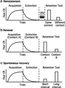
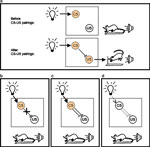
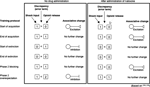
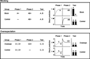

Introduction
In recent years a great deal has been learned about the behavioral characteristics and neural mechanisms of fear acquisition (for reviews see Davis,1 Rodrigues et al.2). Much of this progress may be attributed to the use of Pavlovian fear conditioning as a model system. In this paradigm, an initially innocuous stimulus (the to-be conditioned stimulus – CS; for example, a light, tone, or distinctive place) is paired with an innately aversive unconditioned stimulus (US; e.g., a footshock) and the subject (typically a rat or mouse) comes to exhibit a conditioned fear response (CR) to the CS. In rodents, fear is defined operationally as a cessation of all bodily movements except those required for respiration (freezing), an increase in the amplitude of an acoustically elicited startle response (potentiated startle), an increase in blood pressure, changes in respiration, emission of ultrasonic distress calls, avoidance of the place where shock occurred, or any of a number of other measures, in the presence of the CS.
Much less is known about the mechanisms of fear inhibition although this question is attracting increasing interest because of its clinical importance. Using the same Pavlovian fear conditioning preparation described above, inhibition of fear typically is studied through a procedure in which a previously fear conditioned organism is exposed to the fear-eliciting CS in the absence of the aversive US. This procedure results in a decline in conditioned fear responses that is attributed to a process called fear extinction, which occurs whenever there is a reduction in the predictive value of the CS as to the occurrence of the US.
A few years ago, we3 published a comprehensive review of the neural literature on extinction, which at the time was relatively modest. Since then that literature has grown substantially and a number of advances have been made, necessitating an updated review. In this paper, we will discuss behavioral investigations of extinction and consider how theoretical accounts developed by psychologists have guided neurobiological studies. We also will review exciting new data that are challenging previously held notions and conclude by considering the clinical implications of this work. We largely will restrict our discussion to fear extinction, although we will include data from other conditioning paradigms whenever appropriate.
Behavioral and theoretical considerations
Behavioral features of extinction
Extinction is a complex phenomenon that has resisted simple explanation since it first was characterized by Pavlov.4 In this section, we present some of the fundamental behavioral features of extinction that have emerged over a century of experimental analysis. What follows is by no means a comprehensive review of the behavioral literature on extinction, which is vast and multifaceted. Interested readers are referred to several fine reviews prepared by leaders in this field.5, 6, 7
Before proceeding it should be noted that the term 'extinction' commonly is used in more than one sense, to refer to (1) the experimental procedure used to produce a decrement in the fear response; (2) the decremental effect of this procedure upon the fear response, which can be measured both at the time of the experimental procedure and at a later time; or (3) the hypothesized associative or cellular process responsible for that effect. For the purposes of this review, we will define the experimental procedure as extinction training, the decrement in the fear response measured during extinction training as within-session extinction, and the decrement measured at some interval after extinction training as extinction retention. The term extinction will be reserved for the theoretical process underlying the loss of the fear response. Occasionally we will refer to short-term extinction and long-term extinction; these terms correspond to stages of extinction memory similar to those defined for other forms of learning.8
Extinction is not the same as forgetting
Although it is difficult to be sure that forgetting does not occur to some extent in extinction, numerous studies show that extinction cannot fully be explained by forgetting because extinction requires exposure to the CS in the absence of the US as opposed to the simple passage of time. This is especially true with fear extinction because fear memories can last months or even years with little forgetting.9
Extinction occurs under a variety of training protocols
Generally speaking, any procedure in which the predictive value of the CS with respect to the occurrence of the US is compromised will result in some reduction of the conditioned fear response to the CS. This most obviously applies to the frequently used (and most effective) protocol in which a CS that previously was paired with the US on 100% of its occurrences subsequently is presented repeatedly without further US delivery. However, other protocols that produce a decrement in conditioned responding include ones in which the US continues to be presented but occurs in an explicitly unpaired or random arrangement with the CS;10, 11, 12 ones in which the CS is reinforced on a smaller percentage of its presentations than it was during acquisition (as with a shift from 100 to 50% reinforcement;13 or even ones in which the US continues to be paired with the CS on 100% of its presentations but the intensity of the US is diminished relative to what it was during acquisition14, 15 or to what it was 'expected' to be on the basis of acquisition.16 Hence, a critical determining factor for extinction to occur seems to be a violation of the 'expected' contingency between the CS and the US experienced in earlier stages of training.17, 18, 19
Extinction is cue specific
Although Pavlov4 reported that extinction of one CS generalizes to other CSs trained with the same US, subsequent investigations have indicated that extinction is cue specific. Several studies have defined generalization gradients of extinction following training of cues falling along a spectrum, such a series of increasing auditory frequencies, and extinction of a single value of the continuum.20, 21, 22 The gradient of extinction is remarkably similar to that of acquisition, but inverted, with the lowest levels of responding occurring to the extinguished cue and increasingly greater responding occurring to cues falling farther away along the continuum. Other reports have shown that generalization of extinction is negligible across cues drawn from different sensory modalities, or drawn from a single modality but differing substantially in their physical characteristics.23, 24, 25, 26
Extinction generally is not permanent
The decrement in conditioned fear responses during and shortly after extinction training generally is not permanent, as there are several instances in which extinguished fear responses are observed to reappear. The most thoroughly studied of these are reinstatement, renewal and spontaneous recovery.
Reinstatement
Reinstatement refers to a reappearance of extinguished fear responses following exposure to unsignaled presentations of the US after the completion of extinction training (Figure 1a). Reinstatement was first observed by Rescorla,15 who determined that the effect was specific to extinguished CSs (i.e. it did not extend to neutral CSs) and persisted at least 24 h after unsignaled shock presentations, suggesting that the reappearance of fear responses was not due to sensitization. Subsequent work established that unsignaled US presentations must occur within the context in which animals ultimately are tested if recovery is to be observed, and that extinction (nonreinforced exposure) to that context between unsignaled US presentations and test attenuates fear recovery.27, 28 Thus, reinstatement seems to depend on context conditioning and is likely to involve summation of two fear-inducing tendencies, each behaviorally subthreshold when considered independently, but suprathreshold when combined (cf. Hendry29 and Reberg30): weak conditioning to context and residual net excitation to the extinguished CS. Other context-dependent mechanisms may contribute as well.31
Figure 1.
Extinguished fear responses recover under a variety of circumstances. (a) Reinstatement occurs when unsignaled presentations of the US are interposed between the completion of extinction training and a subsequent retention test. Reinstatement is observed only if the USs are presented in the context in which the retention test will occur, indicating that the effect is context specific. (b) Extinction itself is context specific, as indicated by renewal. For example, if animals are fear conditioned in context A and extinguished in context B, they will exhibit extinction (i.e. little to no fear) if subsequently tested in context B, but they will show little evidence of extinction (i.e. renewed fear) if tested in context A. (c) Spontaneous recovery of extinguished fear responses occurs with the passage of time following extinction in the absence of any further training. The magnitude of recovery increases with the length of the extinction-to-test interval.
Full figure and legend (26K)Renewal
Renewal refers to a reappearance of extinguished CRs when animals are tested in a context different from the one in which extinction training took place (Figure 1b). For example, when animals first are trained to fear a light CS in context A, then receive extinction training to the light in context B, and finally are tested for fear to the light in either context A or context B, different outcomes are obtained: animals tested in context B (the same context where extinction training took place) exhibit little fear to the light, whereas animals tested in context A exhibit robust fear to the light.28, 32 A similar postextinction return of fear is observed when animals are tested in a third, novel context C following acquisition in context A and extinction in context B.32, 33 The renewal effect is not due to simple context conditioning28, 34 but rather appears to reflect an occasion-setting or modulatory role of context in gating performance to the CS.35 Thus, rather than learning that 'now the cue is no longer paired with the shock', the animal learns that 'now, in this place, the cue is no longer paired with the shock'. There is some debate as to whether renewal may be mitigated by overtraining of extinction36, 37 or extinction in multiple contexts.38, 39, 40, 41
Spontaneous recovery
Spontaneous recovery refers to a reappearance of extinguished CRs with the passage of time following extinction training in the absence of any further explicit training (Figure 1c). Generally the degree of CR recovery is directly related to the length of the retention interval, such that more robust CRs are observed at longer delays.42, 43 It has been suggested that spontaneous recovery may be accounted for in terms of handling cues acting as a signal of the impending delivery of the US44 although findings suggesting that spontaneous recovery is observed even when test trials are inserted into the middle of a session are inconsistent with that idea.42, 45 That is, even when handling cues are temporally remote and unlikely to signal US delivery, response recovery occurs upon reintroduction of the CS.
Theoretical accounts of extinction
In this section, we describe three theoretical mechanisms of extinction that have proved indispensable in guiding neurobiological research. There are others as well that we will not cover, and for a discussion of these readers are referred to more comprehensive reviews.5, 42, 46
Most theories of extinction operate from an associative framework in which conditioning proceeds as organisms (1) form representations of the relevant cues (CSs and USs) and situations (contexts), and (2) acquire information about relationships among those cues and situations, which are characterized as associations (bonds) connecting representations within a network-like structure. Representations can be either inactive or active, and are activated either directly, by physical presentation of the stimuli to which they correspond, or indirectly, via associative activation propagated from other representations. Associations are directional and may be either 'excitatory,' meaning that activation of one representation tends to induce activation in the other, or 'inhibitory,' meaning that activation of one representation tends to depress activation of the other.
Specific theories differ in their assumptions as to the rules by which associations are formed and modified, the modifiability of stimulus representations, and the consequences of these choices. However, as a general rule most if not all theories explain the acquisition of conditioned responses as resulting from the formation of an excitatory association between representations of the CS and US (Figure 2a). When this has occurred, physical presentation of the CS activates the CS representation. The US representation then is activated indirectly via its association with the CS representation. Activation of the US representation in this manner triggers the conditioned response.
Figure 2.
Most theories of Pavlovian conditioning operate from an associative framework. (a) Conditioned fear is acquired as the animal forms representations of the cues involved (conditioned stimulus, CS; unconditioned stimulus, US) and develops an excitatory association (line terminating in triangle) between them. When this occurs, physical presentation of the light CS activates the CS representation (indicated by gray), which in turn activates the US representation and triggers a fear response (illustrated as potentiated startle, i.e., a greater amplitude startle response when startle is elicited in the presense of the CS relative to when it is elicited in the absence of the CS). (b) Unlearning accounts of extinction involve destruction of the excitatory association. When this occurs, the CS representation no longer activates the US representation and no fear is triggered (i.e., startle is not potentiated). (c) New learning accounts of extinction involve the formation of a second, inhibitory association whose effect is opposite that of the excitatory association. When this occurs, the CS representation no longer activates the US representation and no fear is triggered. (d) Nonassociative accounts of extinction emphasize modulation of the degree to which CS and US representations can be activated, independent of any assumptions as to associative structure. Physical presentation of the light may fail to activate the CS representation, and/or the CS representation may fail to activate the US representation. In either case the US representation is not fully activated and no fear is triggered.
Full figure and legend (122K)Unlearning
Perhaps the simplest associative mechanism of extinction is one in which the excitatory association between the CS and US representations formed during acquisition is weakened and ultimately broken through extinction training (Figure 2b). This mechanism is featured in some very influential and successful theories (e.g., Rescorla and Wagner,18 Wagner and Rescorla19 and Mackintosh46) but currently is considered by most investigators to be untenable because it does not easily account for observations of CR recovery following extinction. Hence, in most cases the concept of extinction as 'unlearning' or erasure of previously acquired fear has been rejected in favor of more complex mechanisms.
New learning
A popular alternative is one in which the excitatory association emerges from extinction training relatively intact and a second, inhibitory association forms whose effect upon the US representation is opposite that of the excitatory association (Figure 2c). Hence, following extinction, activation of the CS representation produces no net activation of the US representation because the two associations work at cross-purposes, with the inhibitory association depressing activation to the same extent that the excitatory association stimulates it. This mechanism has been incorporated into a large number and variety of theories (e.g., Bouton,35 Hull,47 Konorski,48 Moore and Stickney,49 Pearce,50, 51 Pearce and Hall52 and Wanger53). In order to account for recovery of fear following extinction, many of these sorts of 'new learning' accounts propose that the inhibitory association is not always expressed, either because it is particularly 'fragile' or subject to disruption4 or because it is gated by context, where 'context' is defined broadly to include temporal and interoceptive cues, as well as spatial ones.35
Nonassociative mechanisms
In addition to one or the other of the aforementioned associative mechanisms, several authors have suggested that nonassociative mechanisms may play a role in extinction as well. A number of commonalities between habituation and extinction have been noted and used as the basis for an argument that the response decrement in both cases may arise at least partly through the same mechanism.54, 55, 56, 57 In the framework of associative theory, this sort of mechanism may be translated in terms of the degree to which the CS and/or US representations can be activated (Figure 2d – cf. Wagner53).
Modulation at the level of the CS representation, for example, entails reductions in the degree to which the CS representation is activated by physical presentation of the CS. This may be described as an attentional effect whereby the organism learns to ignore the CS because it no longer is followed reliably by the US. In cellular terms this may be analogous to a failure of neurons within secondary sensory or integrative processing regions (such as the amygdala) to fire in the presence of the CS, despite CS-related firing at earlier levels of processing (such as the retina, thalamus, or primary visual cortex, in the case of a light CS). This sort of mechanism has been argued by Robbins42 to be the one favored by Pavlov,4 and is incorporated into several influential theories46, 52, 53, 58 albeit not as a mechanism of extinction per se but rather as one element of a model intended to address a variety of phenomena.
A related mechanism entails modulation at the level of the US representation. Rescorla and Heth15 proposed that extinction involves a reduction in the degree to which the US representation may be activated either directly, by physical presentation of the US, or indirectly, via associated CS representations. This idea originated in the observation of reinstatement, where unsignaled US presentations were presumed to restore the degree to which a US representation that had been devalued over the course of extinction could be activated. US representation devaluation accounts for several difficult observations, including 'erasure' of reinstatement and spontaneous recovery of fear by extinction of a second CS (which presumably returns the reinstated US representation to its devalued state59, 60); facilitation of extinction by repeated unsignaled presentations of the US after acquisition (which presumably devalues the US representation61, 62); and the relative ease of extinction when the US is omitted as compared to when the US is retained (because continuing US presentations interfere with devaluation of the US representation11). The idea runs into problems, however, with the fact that reinstatement is context specific and extinction is cue specific, as well as other observations.42
A final putative nonassociative mechanism of extinction is response fatigue, a hypothetical suppression of responding that accrues with each response elicitation and accumulates over the course of extinction training until responding ceases. Hull,47 for example, proposed that a nonassociative 'reactive inhibition' (IR) developed during extinction together with an associative form of inhibition (SIR), and that the dissipation of reactive inhibition over time contributed to effects such as spontaneous recovery. The concept of reactive inhibition or response fatigue finds some support in observations that massed extinction training proceeds more readily than does spaced extinction training4, 63, 64 as would be expected if it is assumed that massed response elicitations cause response fatigue to accumulate more rapidly than do spaced response elicitations, although the literature on trial spacing in extinction is rife with negative effects as well as reports of spaced trials being more efficacious than massed trials (for discussion see Mackintosh46). On the other hand, evidence that extinction occurs even when the conditioned response is physically prevented65, 66 are difficult for a response fatigue account to explain.
Emerging evidence for multiple mechanisms of extinction
Based on the above, it seems likely that extinction proceeds through multiple mechanisms, including both associative and nonassociative ones, although the exact nature of those mechanisms and the manner in which they interact is not fully understood. One particularly surprising piece of information that emerged from our laboratory67 is that extinction may be mediated by either unlearning or new learning depending on the time after fear conditioning when extinction training is initiated. In this study, different groups of rats were fear conditioned and then given extinction training either 10 min, 1, 24 or 72 h after acquisition and their susceptibility to recovery of fear through reinstatement, renewal, and spontaneous recovery was evaluated. Animals extinguished at 72 h exhibited robust recovery in all cases, whereas animals extinguished at 10 min exhibited no recovery in any of them. Animals extinguished at intermediate intervals exhibited intermediate recovery. In many cases extinction at the shortest time point was less complete than that at the longest time point (cf. Cain et al.,64 Cammarota et al.68 and Maren and Chang69), but this did not seem to explain the lack of recovery in the 10-min group. As recovery effects have served as the impetus for new learning accounts of extinction, the lack of recovery in the short interval group would seem to be explained most parsimoniously in terms of erasure of conditioned fear and/or prevention of consolidation of fear memory. Perhaps consistent with this, evidence is emerging for a neurobiological difference between short and long interval extinction as well: Cain et al.64 reported that immediate extinction is not affected by the L-type voltage-gated calcium channel (L-VGCC) inhibitor nifedipine, whereas delayed extinction is impaired; and Mao et al.70 found that fear extinction initiated 1 h after fear acquisition reversed a fear conditioning-induced change in a particular glutamate receptor (the GluR1 subunit of the 2-amino-3-hydroxyl-5-methyl-4-isoxazolepropionate (AMPA) receptor) within the amygdala, whereas this reversal did not occur when extinction was initiated 24 h after acquisition.
The apparent difference in the mechanisms of short and long interval extinction may be understandable in the context of consolidation theory, which holds that memories, once acquired, undergo a time-dependent process by which they are converted from a short-term, labile state into a long-term, permanent state.71 When extinction training is initiated 10 min after acquisition, fear memory has only just begun to consolidate, whereas when extinction training is initiated 72 h after acquisition, consolidation probably is complete or close to it. This difference in the consolidation state of fear memory at the two time points may offer a different substrate for extinction to act upon, and thus may be a critical factor in determining the mechanism of extinction.64, 72 Alternatively it seems possible that extinction training occurring in close temporal proximity to CS-US pairings may be perceived by the organism as a continuation of a single training episode rather than a distinct phase of training. In other words, acquisition plus short interval extinction may be analogous to partial reinforcement. As yet there is little evidence for or against this idea. In the same set of experiments in which they found that delayed but not immediate extinction is blocked by the L-VGCC inhibitor nifedipine, Cain et al.64 observed no effect of nifedipine on the acquisition of fear conditioned under a partial reinforcement schedule, suggesting that perhaps immediate extinction and partial reinforcement are similar mechanistically. However, this same group also reported that fear acquisition conditioned under a continuous (100%) reinforcement schedule was not affected by nifedipine,64 making it difficult to interpret the lack of effect under the partial reinforcement schedule.
The idea that unlearning and new learning mechanisms may coexist is not a new one. Some authors (e.g., Delamater6 and Rescorla7) have argued that a strict inhibitory account of extinction is overly simplistic because it ignores the fact that CR recovery is seldom complete (i.e., to the level exhibited at the completion of acquisition or by nonextinguished comparison groups), suggesting that some degree of erasure normally occurs. This is an important and often underemphasized point. Based on our findings, we would argue that extinction may be mediated primarily by one process or the other, or by a combination of the two, depending on circumstances such as the timing of extinction training and perhaps other factors as well. A fuller account of the mechanistic differences between these processes is likely to emerge from cellular investigations (e.g., see Cain et al.,64 Mao et al.70 and Schwaerzel et al.73).
Neural mechanisms
The neurobiological literature on fear extinction includes work conducted at multiple levels of analysis aimed at understanding the anatomical substrates of extinction and the cellular and molecular mechanisms of extinction-related plasticity. We will consider these issues separately in sections on brain structures, neurotransmitter systems, and intracellular signaling pathways.
Brain structures
Several brain structures have been implicated in fear extinction and fear inhibition more generally, including sensory cortex,74, 75, 76, 77, 78 periaqueductal gray79, 80, 81 (see below), inferior colliculus,82 lateral septum,83, 84, 85, 86 bed nucleus of the stria terminalis,87 and ventral88 and dorsal striatum.89 In this section, we will focus on those for which there is the most information available: the amygdala, hippocampus and prefrontal cortex.
Amygdala
The basolateral complex of the amygdala (BLA; lateral, basal and accessory basal nuclei) is critical to the acquisition and expression of conditioned fear and seems to be involved in fear extinction as well. Pharmacological studies have reported effects on within-session extinction and extinction retention of targeted administration of drugs into BLA at specific times relative to extinction training, and analyses of gene expression have noted modulation within BLA following extinction training. These findings will be discussed in greater detail in subsequent sections.
Amygdala lesions or inactivation
Lesion studies examining the contribution of the amygdala to extinction generally are problematic because lesions of the lateral (LA) or central (CeA) nuclei eliminate expression of conditioned fear.1 However, in an attempt to differentiate the contribution of LA and the basal nucleus (BA), some investigators have examined the effect of BA lesions upon extinction. This was considered possible because BA lesions have little if any effect upon the acquisition or expression of conditioned fear when the lesions are made before training.90, 91, 92, 93 When done before acquisition, BA lesions did not have an effect on the extinction of fear, leading to the suggestion that LA and not BA is the critical locus of amygdalar involvement in extinction.72 When done after acquisition, however, BA lesions eliminated expression of conditioned fear,91 making it impossible to determine an effect on extinction. What this seems to suggest is that BA normally is recruited during acquisition and contributes to the expression of conditioned fear, but in the absence of BA other regions are able to compensate. Hence, it appears that pretraining BA lesions may not be a useful tool for determining the contribution of LA or BA to extinction because the mechanism of fear acquisition and/or expression apparently is altered by the lesion in such a way that these processes (and perhaps extinction as well) are taken over by other areas.
A somewhat different approach was taken by Akirav,94 who temporarily inactivated the BLA via localized infusions of the -aminobutyric acid (GABAA) receptor agonist muscimol before or immediately following cued (tone) extinction training. Consistent with previous reports,95 muscimol impaired expression of freezing during the extinction training session, but did not produce a lasting effect on within-session extinction in subsequent sessions conducted in the absence of infusions. It is difficult to ascertain whether pre-extinction training muscimol had any effect on extinction retention because there was very little retention in any group, including saline-treated controls, although there was no hint of a facilitation by muscimol. Separate experiments involving intra-BLA infusions of muscimol after extinction training are somewhat more informative and demonstrate a significant facilitation of extinction retention as tested in the absence of infusions. That is, animals infused with muscimol immediately after extinction training exhibited significantly less freezing to the tone CS beginning on its first presentation 24 h after extinction training. This seems to suggest that BLA activity following extinction training is detrimental to consolidation of extinction memory. In contrast, Berlau and McGaugh96 reported no effect of unilateral (right) BLA infusions (cf. Lalumiere and McGaugh97) of muscimol immediately after extinction training upon extinction of contextual freezing, even with a dose of muscimol that was considerably higher than that employed by Akirav94 (125 vs 50 ng). Moreover, contrary to what one would have expected from Akirav,94 Berlau and McGaugh96 reported facilitation of extinction retention by unilateral infusions of the GABAA receptor antagonist bicuculline (which would be expected to increase amygdalar activity) into the right BLA immediately, but not 3 h, following extinction training.
Amygdala unit activity
Studies of amygdala activity during extinction training have been somewhat inconsistent. In rodents, conditioned unit activity in LA initially was reported to disappear during extinction training,98 although a later report from the same group99 suggested that there may be two populations of LA neurons, one that exhibits CS-related activity at the beginning of extinction training and then stops, and one that continues to fire to the CS throughout extinction training, exhibiting some decrease but not a complete disappearance. In rabbits, CeA conditioned unit activity has been reported to extinguish during extinction training in an avoidance paradigm.100, 101 In humans, imaging studies examining amygdalar activity have reported temporary activation at the beginning of extinction training;102, 103, 104 persistent activation throughout extinction training;102 and decreased activation to a previously reinforced CS undergoing extinction but increased activation to a previously nonreinforced CS undergoing acquisition (i.e., in a reversal learning paradigm105).
Only one study has examined CS-related amygdala unit activity after the completion of extinction training. Hobin et al.106 recorded LA neurons in rats several days after the completion of three sessions of extinction training and employed a renewal design in which animals were tested either in the same context used in extinction training or in a different context. When animals were tested in the same context, LA units exhibited little CS-related activity, whereas when animals were tested in a different context, LA units fired robustly in the presence of the CS. This pattern of neuronal responding paralleled behavioral observations of little freezing in the same context and significant freezing in the different context, and thus represents a cellular correlate of renewal. This finding suggests that the amygdala does in fact retain CS-related firing after extinction, and that the within-session suppression of firing during extinction training noted by some investigators is most likely temporary.
Hippocampus
There are two separate, contemporary literatures on hippocampal involvement in fear extinction. One concerns the role of the hippocampus in either inhibitory avoidance, a variant of the typical Pavlovian fear conditioning paradigm in which a rat is placed into the light side of a light/dark shuttlebox and is shocked immediately upon entering the dark compartment, or step-down avoidance, in which a rat is placed on a raised platform and is shocked upon stepping down to a grid floor. When later returned to the light compartment or raised platform, respectively, rats exhibit an increased latency to enter the dark compartment or to step down. The acquisition of both inhibitory and step-down avoidance requires the hippocampus, specifically CA1, as well as the BLA.107 Extinction of both inhibitory and step-down avoidance also involves the hippocampus, as indicated by modulation of extinction following targeted administration of a variety of drugs into CA1 before or immediately following extinction training. We will discuss these findings in more detail in subsequent sections.
The second literature on hippocampal involvement in extinction concerns the role of the hippocampus in contextual modulation of extinction. The hippocampus has long been implicated in contextual fear conditioning108, 109 and it is widely believed that the hippocampus processes contextual information and sends configural representations of context to the amygdala, where they are associated with footshock.110 Consistent with this general framework, reinstatement of extinguished fear, a context-specific phenomenon thought to be mediated primarily by context-US associations, is disrupted by pretraining radiofrequency lesions of fimbria-fornix111 or pretraining electrolytic lesions of hippocampus.112
Hippocampal involvement in renewal is more complex. Studies involving permanent, pretraining lesions of fimbria-fornix111 or hippocampus112, 113 have reported inconsistent effects, but studies employing temporary inactivation of hippocampus via localized infusions of the GABAA receptor agonist muscimol have reported specific deficits. When animals are tested in a novel context (AAB or ABC renewal) and muscimol is infused into hippocampus before test, renewal is not observed (i.e., freezing is equally low in all contexts). By contrast, when animals are tested in the context of acquisition (ABA renewal), pretest muscimol infusions are without effect (i.e., renewal is observed114, 115, 116, 117). The findings of the former set of studies might be understood in terms of muscimol preventing the hippocampus from processing contextual information in test and thereby freeing extinction from contextual gating, although it is unclear why ABA renewal apparently operates through a different mechanism.
When muscimol is infused into the hippocampus before extinction training and animals are tested in the absence of infusions, high levels of freezing are observed no matter which context is used in test, even the context in which extinction training occurred.114 This effect has been interpreted as renewal occurring in all contexts and might be rationalized as follows: if contextual encoding by the hippocampus is prevented during extinction training by muscimol infusions, then the extinction context will not be recognized as such in test when hippocampal functionality is restored, and renewal will occur just as it would with a context shift. Alternatively, it seems possible that the universally high levels of freezing following pre-extinction training muscimol infusions reflect state dependency or a disruption of extinction memory consolidation.
The effect of hippocampal lesions or pre-extinction training inactivation upon the development of extinction is unclear. In most experiments there is no effect of these manipulations112, 113, 118 but there is one report of a decrease in freezing across an extinction training session following pretraining electrolytic lesions113 and one report of a disruption of within-session extinction following pre-extinction training infusions of muscimol.114 Two recent physiological studies by Garcia and co-workers indicate that long-term potentiation (LTP) is induced in the output pathways of the dorsal119 and ventral120 hippocampus by extinction training; that extinction is impaired by application of depotentiation-inducing low-frequency stimulation to the dorsal hippocampus following extinction training;119 and that application of LTP-inducing high-frequency stimulation to the dorsal hippocampus shortly after depotentiation induction restores extinction behavior.119 It remains unclear which targets of hippocampal projections are important for these effects, because even though LTP and depotentiation were observed as modulation of field potential amplitudes in medial prefrontal cortex, prefrontal cortical lesions had no effect on extinction119, 121 or on the modulation of extinction by hippocampal low-frequency stimulation119 in studies by this group.
Medial prefrontal cortex
One of the fastest growing areas of the fear extinction literature concerns the involvement of medial prefrontal cortex (mPFC) in extinction. A number of studies employing a large variety of techniques have implicated mPFC, and particularly the infralimbic (IL) cortex, in retention and/or expression of fear extinction. mPFC recordings show increased CS-related unit activity122 and induction of synaptic plasticity119, 120, 123, 124, 125, 126 following extinction training. Microstimulation of mPFC during extinction training reduces conditioned freezing and facilitates later retention of extinction.122, 127 Visualization of PFC activity via metabolic mapping in rodents killed following extinction training reveals increased uptake of a labeled glucose analog by prefrontal tissue.128 In humans, expression of extinction of conditioned fear is associated with increased BOLD response in the subgenual anterior cingulate (vmPFC) as assessed by fMRI,105 and increased thickness of prefrontal cortex as revealed by structural MRI.129 Immunocytochemistry shows increased expression of immediate early genes within mPFC following extinction training125, 130 (but see Morrow et al.131). Finally, intra-PFC infusion of a D4 dopamine receptor antagonist132 or a protein synthesis inhibitor130 before extinction training, or a mitogen-activated protein kinase (MAPK) inhibitor immediately postextinction training,120, 133 impairs extinction retention tested later in the absence of the drug.
There is some evidence to suggest PFC modulation of amygdalar activity. In the rat, infralimbic cortex projects to BLA, CeA, and the intercalated cell masses (ICMs).134, 135, 136 Stimulation of mPFC inhibits CeA unit responses to afferent stimulation.137 The effect of mPFC stimulation upon BLA activity is the subject of some disagreement, with some authors reporting primarily excitation138 and others reporting primarily inhibition.139, 140 The effect of mPFC stimulation upon ICM activity has not been ascertained directly, although activation of ICMs is suggested by increased ICM expression of Fos following injections of picrotoxin, a GABAA receptor antagonist, into infralimbic cortex.141 As ICMs primarily are GABAergic,142 receive projections from BLA and project to CeA,143, 144 modulate CeA excitability,145 and exhibit forms of synaptic plasticity including LTP and long-term depression (LTD),146 it has been proposed that mPFC may modulate ICM activity either directly or indirectly (i.e., via the BLA) and thereby gate amygdalar throughput and suppress triggering of fear responses in extinction.72, 137, 147
Surprisingly, in contrast to these findings, lesion or inactivation studies examining the involvement of mPFC in extinction have been inconsistent. Some investigators have reported an impairment of extinction of conditioned freezing following electrolytic lesions of mPFC or, more specifically, IL, in rodents148, 149, 150, 151 but there also have been some notable failures to obtain a PFC lesion effect119, 121, 152, 153 as well as mixed findings.154 It is possible that the timing of the lesion with respect to fear acquisition is significant since the reports of positive lesion effects all involve lesions induced before fear conditioning, suggesting that the apparent extinction effect may in fact be a secondary effect on acquisition. Perhaps consistent with this idea, Morgan et al.155 reported that PFC lesions had no effect on an initial extinction training session when administered postacquisition, but did impair the rate of re-extinction following re-acquisition when these phases of training were done with the lesions already in place. On the other hand, studies employing inactivation of mPFC via infusion of GABA receptor agonists before extinction training or test have reported either no effect (KM Myers and M Davis, unpublished data) or facilitation of extinction,94 contrary to the predictions of the prefrontal model. It is not clear at the present time how to interpret these inconsistencies.
Neurotransmitter systems
The literature on neurotransmitter involvement in fear extinction is built on the assumption that extinction is a form of inhibitory learning that leaves acquisition-related plasticity relatively intact. It is expected, therefore, that most neurotransmitter systems should be involved similarly in fear extinction as in fear acquisition, although certain differences might stem from the excitatory vs inhibitory nature of these two forms of learning.
-Aminobutyric acid
The major inhibitory neurotransmitter in the mammalian brain, -aminobutyric acid, seems to figure prominently in the development and expression of fear extinction. Harris and Westbrook156 demonstrated that FG-7142, an inverse agonist of the GABAA receptor that functionally decreases GABA transmission, dose-dependently impaired within-session extinction and, when administered before test, blocked extinction retention in the context of extinction training, but had no effect on performance in a novel context. That is, both vehicle-treated and FG-7142-treated animals showed equal renewal of the fear response when tested outside of the extinction context. This indicates that FG-7142 did not nonspecifically increase the fear response, but rather 'selectively reversed the component of extinction linked to the environmental context where extinction training had occurred'.156 This effect could not be explained by state dependency. Thus, it appears that GABA is involved in the expression of extinction in a context-dependent manner.
Our laboratory has found that mRNA coding for gephryin, a protein that contributes to the regulation of GABAergic neurotransmission by clustering GABAA receptors at the synapse, is upregulated in the BLA following extinction training157 and is downregulated following fear acquisition.158 In our latest study we replicated the acquisition finding, reporting a decrease in gephyrin protein and the surface expression of GABAA receptors 2 and 6 h after fear acquisition, respectively. Following extinction training, gephyrin mRNA, gephyrin protein and GABAA receptor binding increased at 2, 4 and 6 h, respectively. These results implicate gephryin in both fear acquisition and extinction and suggest that GABAergic neurotransmission in the BLA is modulated differentially following these two types of learning.
GABA has been implicated in the consolidation of extinction as well. McGaugh et al.159 reported that postextinction training systemic administration of the GABA antagonist picrotoxin enhanced extinction retention in a test conducted 24 h later, as assessed with an active avoidance paradigm (but see Akirav et al.94). The effect of picrotoxin was not observed in animals not receiving extinction training, indicating an extinction-specific effect. Similarly, as mentioned earlier, Berlau and McGaugh96 reported facilitated extinction of contextual freezing by unilateral (right) intra-BLA infusions of the GABA receptor antagonist bicuculline immediately but not 3 h after extinction training. These effects are similar to the effects of GABAergic modulators on fear acquisition: GABA agonists disrupt and GABA antagonists facilitate acquisition of aversively motivated tasks (e.g. Castellano and McGaugh160). Pereira et al.161, 162 found that pre-extinction training, systemic administration of diazepam, a benzodiazepine, impaired extinction retention in a test conducted 24 h later. These authors attributed this effect to a disruption of the development or consolidation of extinction, but it is possible that it was due to state dependency.163
Glutamate
The involvement of glutamate, and particularly its actions at N-methyl-D-aspartate (NMDA) receptors, is one of the most thoroughly investigated areas of the fear extinction literature. NMDA receptor antagonists block extinction of freezing and fear-potentiated startle when administered before extinction training either systemically or directly into the BLA164, 165, 166, 167, 168 and block extinction of step-down avoidance when administered before extinction training directly into the CA1 region of hippocampus.68, 169 The effect is dose-dependent and not due to state dependency.
In most reports the impairing effect of pre-extinction training NMDA receptor antagonism was noted during an extinction retention test conducted some time thereafter in the absence of the drug, making it difficult to determine whether the antagonist blocked the development or consolidation of extinction. A consolidation effect is suggested by a report by Santini et al.,170 who found that the impairment of extinction associated with systemic pre-extinction training administrations of the NMDA receptor antagonist ( )-3-(2-carboxypiperazin-4-yl)-propyl-1-phosphonic acid (CPP) was evident in a test conducted 24 h but not 48 h later. Hence, the deficit was temporary. Intriguingly, when the antagonist was administered before extinction training and again 24 h later in the absence of any further training, and the animals were tested drug-free 48 h after extinction training, extinction retention was again impaired. This suggests that there may be an NMDA receptor-dependent consolidation process in extinction that can be delayed when NMDA receptors are not functional within the normal consolidation time frame. On the other hand, Szapiro et al.,169 using a step-down avoidance paradigm, found that intra-hippocampal infusions of the NMDA receptor antagonist AP5 immediately following the first of four daily extinction exposures produced a lasting impairment that persisted even with additional extinction training in the absence of infusions. Bevilaqua et al.,171 using a nearly identical protocol, reported a similar lasting impairment with pre-extinction training infusions into entorhinal cortex.
)-3-(2-carboxypiperazin-4-yl)-propyl-1-phosphonic acid (CPP) was evident in a test conducted 24 h but not 48 h later. Hence, the deficit was temporary. Intriguingly, when the antagonist was administered before extinction training and again 24 h later in the absence of any further training, and the animals were tested drug-free 48 h after extinction training, extinction retention was again impaired. This suggests that there may be an NMDA receptor-dependent consolidation process in extinction that can be delayed when NMDA receptors are not functional within the normal consolidation time frame. On the other hand, Szapiro et al.,169 using a step-down avoidance paradigm, found that intra-hippocampal infusions of the NMDA receptor antagonist AP5 immediately following the first of four daily extinction exposures produced a lasting impairment that persisted even with additional extinction training in the absence of infusions. Bevilaqua et al.,171 using a nearly identical protocol, reported a similar lasting impairment with pre-extinction training infusions into entorhinal cortex.
Also arguing for a consolidation-related role of NMDA receptors in extinction is work involving the NMDA receptor partial agonist D-cycloserine (DCS). We first reported that DCS facilitates extinction of fear-potentiated startle when administered either systemically or directly into the amygdala before extinction training172 (see also Yang and Lu173). This effect subsequently was replicated with freezing as a measure by Ledgerwood et al.,174 who found that DCS facilitated extinction when administered either before or after extinction training at intervals up to 120 min. Post-training drug effects that exhibit temporal gradients such as this one generally are taken to reflect modulation of consolidation.
There are several interesting effects associated with DCS facilitation of extinction. DCS-facilitated extinction is less susceptible to reinstatement175 and generalizes to a comparably trained but nonextinguished cue.176 DCS facilitates extinction of fear conditioned with a US other than shock (a 120 dB noise burst) and does not impair the ability to reacquire fear following extinction.176 One or five daily injections of DCS, terminating 24 h before acquisition, reduces the effectiveness of DCS in facilitating extinction, although the pre-exposure effect is eliminated when 28 days elapse between pre-exposure and acquisition.177 The effect of DCS appears to be mediated through MAPK and phosphatidylinositol 3 kinase (PI3K) in the BLA and requires both transcription and protein synthesis.173 Finally, DCS causes a reversal of an acquisition-induced GluR1 expression increase within the BLA and facilitates the induction of synaptic depotentiation in amygdala slices,70 which, together with the resistance of DCS-facilitated extinction to reinstatement,175 may indicate that DCS induces erasure of fear memory.
One puzzling aspect of the literature on glutamatergic involvement in extinction is the lack of effect of pre-extinction training administration of the AMPA/kainate receptor antagonist 6-cyano-7-nitroquinoxaline-2,3-dione (CNQX) upon subsequent extinction retention.165, 167 This is puzzling because CNQX completely blocks the expression of fear-potentiated startle,178 and one might expect that a treatment that blocks expression of conditioned fear would also block extinction. In the report by Lin et al.,167 it is possible that the low levels of fear-potentiated startle observed in test were due to an impairment of fear expression by CNQX because the test was conducted 20 min after extinction training, when the drug likely had not yet been metabolized. However, this sort of explanation does not easily account for the results of Falls et al.,165 whose test was conducted 24 h after the completion of extinction training in the absence of additional infusions. It is possible that CNQX blocks the expression of fear-potentiated startle at a locus downstream of NMDA-dependent extinction plasticity within the amygdala.
There has been surprisingly little work on the contribution of metabotropic glutamate receptors to fear extinction, although one report suggests that metabotropic glutamate receptor 7 (mGluR7) may be involved. mGluR7 is a group III mGluR that binds to Gi, a type of G-protein that inhibits adenylyl cyclase and thereby prevents cAMP formation. Within the amygdala, mGluR7 is localized to presynaptic terminals of glutamatergic neurons179 and may act to inhibit glutamate release.180 Callaerts-Vegh et al.181 compared mGluR7-/- mice with mGluR7+/+ littermate controls on a variety of tasks, including a conditioned emotional response (CER) procedure in which tone-shock pairings were introduced while the animals performed a previously trained nose-poke task in which nose pokes were reinforced by delivery of food pellets. Both groups of animals learned to nose poke equally well and both came to suppress nose poking during tone presentations equally quickly. However, in a subsequent session when tone presentations were nonreinforced, mGluR7-/- mice were delayed significantly in extinguishing the suppression of nose poking during the tone, relative to wild-type littermate controls. That is, whereas wild-type animals gradually ceased to exhibit fear to the tone over several nonreinforced tone presentations, knockout animals were significantly slower to do so. This suggests that mGluR7 activation contributes to fear extinction, perhaps via suppression of glutamate release, although several important issues remain to be addressed. First, it will be important to determine whether inducible knockout of mGluR7 before extinction training will have the same effect as does the constitutive knockout that is in place during both acquisition and extinction training. This is critical because both knockout and wild-type animals learned the CER component of the task within a single trial (i.e., both groups exhibited maximal suppression on the second tone presentation during training), making it very difficult to determine whether the knockout animals exhibited any facilitation of fear acquisition that might explain their apparent delay in fear extinction. Second, if the impairment in animals with compromised mGluR7 function does seem to be specific to extinction, it will be important to determine the neuroanatomical locus of the receptors that are involved.
Dopamine
Dopamine is involved in a great variety of learning and memory processes, including fear conditioning. Acquisition and expression of fear are facilitated by administration of dopamine receptor agonists and electrical stimulation of the ventral tegmental area182, 183, 184 and are disrupted by administration of dopamine receptor antagonists or lesions of midbrain dopamine systems.185, 186, 187
Several studies have implicated dopamine in fear extinction as well, although the nature of the modulation seems to be opposite that seen with acquisition. Hence, extinction is disrupted by manipulations that increase dopamine bioavailability or facilitate dopamine receptor function. Willick and Kokkinidis188 reported that systemic administration of cocaine before extinction training had no effect on within-session extinction of fear-potentiated startle but impaired extinction retention. This effect could not be explained by state dependency. A subsequent study189 replicated the cocaine effect and reported a similar disruption of extinction following administration of amphetamine or the specific D1 agonist SKF 38393. Both cocaine and SKF 38393 also disrupted extinction retention when administered before test in animals that had been extinguished drug-free. Nader et al.184 reported that systemic administration of the D2 receptor agonist quinpirole before extinction training impaired extinction retention, although a possible state-dependent effect was not ruled out in this study (see also Ponnusamy et al.190).
There is some evidence to suggest facilitation of extinction following interference with dopamine receptor function in mice. Ponnusamy et al.190 reported facilitation of extinction retention, but not within-session extinction, by pre-extinction training systemic administration of sulpiride, a D2 receptor antagonist. On the other hand, El-Ghundi et al.,191 found that D1 receptor knockout mice were impaired in extinction retention in an inhibitory avoidance paradigm, although ceiling effects in acquisition in that study make it difficult to interpret the apparent extinction effect.
As none of this work involved targeted manipulations, it is impossible to know the locus of these effects. Theoretically dopamine might modulate extinction through its effects on the amygdala,192, 193, 194, 195 prefrontal cortex,196, 197, 198, 199 and/or the interaction between these structures.139, 200
Acetylcholine
Only two studies have examined the contribution of cholinergic neurotransmission to fear extinction and both focus on the expression rather than the development of extinction. Prado-Alcala et al.201 found that systemic administration of scopolamine, a muscarinic acetylcholine receptor antagonist, before the seventh of eight weekly extinction exposures to a shuttle box apparatus resulted in a robust return of inhibitory avoidance behavior (i.e., an impairment of extinction retention) relative to animals injected with saline or methylscopolamine, which does not easily cross the blood–brain barrier. Rats that did not receive a shock during training exhibited no increase in response latency following administration of scopolamine. This suggests that the expression of extinction in this paradigm involves release of acetylcholine and binding to muscarinic acetylcholine receptors. A later paper from this same group showed that the disruption of extinction retention by scopolamine was dose-dependent and observable as long as nine months after initial training.202 These findings are interesting in light of previous data indicating that scopolamine disrupts the expression of inhibitory avoidance,203 and suggest that acetylcholine is not universally required for retention, but rather is involved selectively in retrieval of the most recent information acquired about a cue or situation.
Opioids
In our earlier review,204 we included a section entitled 'how is nonreinforcement detected,' which noted that the detection of the nonoccurrence of an expected US is a critical feature of extinction training protocols and, as such, an understanding of the mechanisms by which this occurs will be critical to a full understanding of extinction. At that time there was very little information on the so-called 'error signal' involved in Pavlovian fear conditioning, although work in other paradigms including eyeblink conditioning in rabbits205 and appetitive learning in nonhuman primates206 held promise that such a signal could be identified and experimentally manipulated. Since then some exciting work by Gavan McNally and co-workers has argued convincingly that a fear error signal exists and involves endogenous opioid signaling within the ventrolateral periaqueductal gray (vlPAG).
The basic premise of the error signal assumed by many theoretical18 and cellular207 models of learning is that the degree to which a US produces associative change is inversely related to the degree to which the CS predicts the US. Hence, the discrepancy between the 'actual' and 'predicted' US drives learning: when the discrepancy is positive (i.e., the US is not fully predicted), excitatory learning occurs; when the discrepancy is negative (i.e., the US is overpredicted), inhibitory learning occurs; and when the discrepancy is zero (i.e., the US is perfectly predicted), no learning occurs. Psychological theories represent this error correction process in mathematical terms, and neural theories propose that error correction proceeds as the CS comes to inhibit brain areas normally activated by the US, thereby reducing its effective impact. If the US is withheld, CS-induced inhibition occurs in the absence of any counteractive US-induced excitation and this somehow initiates extinction-related plasticity.
Endogenous opioids have been implicated in Pavlovian fear conditioning for some time. Administration of opiate antagonists such as naloxone before CS-US pairings facilitates acquisition of conditioned fear208, 209, 210 via actions at central rather than peripheral opioid receptors.211 It is hypothesized that, over the course of acquisition, endogenous opioid release is stimulated by the CS and reduces the functional intensity of the US by producing conditioned analgesia.208, 212 Naloxone administration before training effectively blocks this conditioned analgesia, thereby maintaining functional US intensity at its starting value. This analgesia-based error correction hypothesis is compelling and accounts for certain difficult-to-explain observations.210 However, there are indications that opioid involvement in fear conditioning is not limited to the mitigation of functional US intensity. In particular, opioids modulate learning that occurs when there is no shock involved, such as extinction. In fact, earlier work suggested that extinction of active avoidance is impaired by opiate antagonists213, 214 (but see Vigorito and Ayres215) and facilitated by certain opioids213, 214
Consistent with these older findings, McNally and co-workers216 have found that systemic administration of naloxone before extinction training profoundly retards the development of extinction of freezing to a tone both within and between extinction training sessions. The effect is mediated by central, not peripheral, opioid receptors and is not a consolidation or expression effect because naloxone administration immediately after extinction training or before test has no effect. Naloxone infusions directly into ventrolateral (vlPAG) but not dorsal PAG mimic the systemic effect,81 suggesting that the vlPAG is the critical locus of extinction-related endogenous opioid release. Intra-vlPAG infusion of the opioid receptor antagonist CTAP, but not the receptor antagonist nor-binaltorphimine or the receptor antagonist naltrindole, also mimics the systemic effect of naloxone, suggesting that binding of endogenous opioids to receptors specifically is involved in extinction.217 Extinction also is retarded by intra-vlPAG infusions of the cAMP analog 8-Br-cAMP, suggesting that the cellular effects of naloxone or CTAP in modulating extinction are mediated by cAMP inhibition that would occur with opioid receptor activation;217 however, it is not clear why in this same study there was no effect of intra-vlPAG infusions of the Protein kinase A (PKA) activator sp-cAMPs. Finally, pre-extinction training infusion of RB101(S), an inhibitor of endogenous opioid catabolizing enzymes, facilitates extinction dose-dependently and site-specifically when infused into vlPAG before extinction training.79
In light of the facilitation of fear acquisition and retardation of extinction by naloxone, McNally and co-workers proposed that endogenous opioid release within the vlPAG contributes to error correction in the manner shown schematically on the left hand side of Figure 3. Shock input assumes a value of 1 if shock is delivered and 0 if shock is withheld. Endogenous opioid release represents 'expected' shock input and increases in value to the extent that the animal has learned to 'predict' shock. Hence, at the beginning of fear acquisition, opioids are not released; the discrepancy between actual and predicted shock is large and positive; and excitatory learning occurs (represented by an excitatory association). As training proceeds, opioids are released increasingly on each successive CS presentation until the opioid signal matches the shock signal, there is no further discrepancy, and no further learning occurs. At the beginning of extinction training, there is no shock input; opioid release is robust; and a large, negative discrepancy drives inhibitory learning (represented by an inhibitory association). As extinction training proceeds, opioid signaling is increasingly depressed until there is no further discrepancy between actual shock input (0) and expected shock input (0), at which point no further learning occurs. Naloxone modulates these processes in the manner shown on the right hand side of Figure 3: naloxone, by blocking opiate receptors, functionally blocks the effect of endogenous opioid release so that, in acquisition, the discrepancy is artificially maintained and learning is facilitated; and in extinction, the discrepancy is artificially held at or close to zero and learning is retarded.
Figure 3.
Theoretical conception of the role of endogenous opioid release in error signaling in several phenomena of Pavlovian fear conditioning. The discrepancy between actual and predicted shock input drives learning: excitatory associations form and are strengthened when the discrepancy is positive; inhibitory associations form and are strengthened when the discrepancy is negative; and no further learning occurs when the discrepancy is zero. The opioid antagonist naloxone modulates learning by modulating the value of the error term.
Full figure and legend (43K)Further evidence for this general conception comes from additional work by McNally and colleagues examining naloxone modulation of somewhat more complex learning phenomena whose explanation requires an error correction mechanism of the sort described above. The first of these is blocking, in which acquisition of fear to a CS, B, is 'blocked' when B is trained in compound with a second CS, A, that previously had been paired with the US (upper panel of Figure 4 – Kamin218). Theoretically, blocking occurs because the shock is fully predicted by A during phase 2 of training, so the error signal is zero and no further learning occurs. If A's prediction of shock is mediated by opioid release, then administration of naloxone before phase 2 of a blocking design should restore the discrepancy between actual and predicted shock and permit learning about B to occur (right side of Figure 2). This is exactly what happens: blocking is eliminated by naloxone.80, 210, 219 This effect, like the retardation of extinction, is mimicked by infusion of naloxone or the opioid antagonist CTAP directly into vlPAG.80
Figure 4.
Schematic representation of the experimental protocol and hypothetical associative learning processes underlying blocking (upper panel) and overexpectation (lower panel). In each case the cues involved come, over trials, to predict shock delivery. The arrow indicates actual shock magnitude. In blocking, A comes to predict shock perfectly during phase I of training, so no learning accrues to B during phase 2 because the error term is zero. In overexpectation, C, D each come to predict shock perfectly during phase I of training, but when compounded during phase 2 those predictions summate and 'overpredict' the US. As a result, the error term is negative and both C, D lose some shock predicting ability.
Full figure and legend (24K)The second additional phenomenon examined by McNally and co-workers is overexpectation, in which two CSs, C and D, are paired with the US separately in one phase of training, then are paired with the US in compound in a second phase (lower panel of Figure 4). Despite 100% reinforcement of C and D throughout the experiment, both CSs are observed to elicit less fear at the conclusion of phase 2 than they did at the conclusion of phase 1.220 Theoretically this occurs because C and D each came to predict shock during phase 1. When C and D are compounded in phase 2, their separate predictions of shock summate, with the result that the 'expected' shock is now more intense than the actual shock. This discrepancy results in a negative error term, which produces inhibitory learning to C and D until their combined shock prediction equals the actual intensity of the US (left side of Figure 3). If the prediction of shock by C and D is mediated by opioid release, then administration of naloxone before phase 2 should eliminate the discrepancy between actual and predicted shock and thereby prevent C and D from losing any fear-eliciting ability (right side of Figure 3). This prediction was borne out experimentally.219
Altogether this line of research presents convincing evidence for a role of endogenous opioid release at the level of the vlPAG in error correction in Pavlovian fear acquisition and extinction. It remains to be seen how an error signal orchestrated at the level of the vlPAG modulates plasticity occurring elsewhere in the brain, such as the amygdala; and whether this signal specifically modulates conditioned fear responses that require PAG to be expressed, such as freezing,221 but not those that operate independently of PAG, such as conditioned suppression.222
Cannabinoids
Interest in endogenous cannabinoid involvement in fear extinction stems from observations that cannabinoids modulate memory in a variety of paradigms223 and that the central nervous system cannabinoid receptor (the CB1 receptor) is expressed throughout the forebrain and enriched in the basolateral amygdala.224, 225, 226 Within the BLA, CB1 receptors are localized primarily on GABAergic interneurons225, 227 and cannabinoids modulate both GABAergic neurotransmission and synaptic plasticity.228, 229, 230, 231, 232
Marsicano233 studied fear acquisition and extinction in mutant mice lacking both copies of the gene for the CB1 receptor (CB1-/-) as well as their wild-type littermates (CB1+/+). Both groups of mice were able to acquire and retain fear to a tone paired with footshock, but the CB1 knockouts showed a selective and profound impairment of both within-session extinction and extinction retention. This effect was mimicked in wild-type mice administered the CB1 antagonist SR141716A before extinction training. SR141716A had no effect when administered immediately postextinction training, suggesting that cannabinoids are not involved in extinction memory consolidation. Expression of two endogenous cannabinoids, anandemide and 2-arachidonolyglycerol, increased in the BLA but not mPFC of wild-type mice following extinction training, relative to nonextinguished animals or animals that had received unpaired tone and shock presentations in acquisition. Slices obtained from knockout mice appeared normal in their electrophysiological characteristics except that long-term depression of GABAA receptor-mediated inhibitory postsynaptic currents (called 'LTDi') was impaired. The impairment of LTDi was mimicked in slices obtained from wild-type mice and superfused with SR141716A.
Impairment of fear extinction by pre-extinction training administration of SR141716A has been reported by several other groups as well168, 234, 235 Chhatwal et al.,234 in a study of extinction of fear-potentiated startle in rats, examined SR141716A as well as positive modulators of cannabinoid neurotransmission. The CB1 agonist WIN 55,212-2 had no effect on extinction retention when administered systemically before extinction training, but AM404, an inhibitor of cannabinoid reuptake and enzymatic degradation, dose-dependently facilitated extinction retention measured 1 and 24 h after extinction training and impaired subsequent reinstatement following exposure to unsignaled footshock. The facilitatory effect of AM404 on extinction retention was blocked by co-administration of SR141716A. Neither compound affected baseline startle amplitude, indicating that the effect of these drugs on potentiated startle is not a measurement artifact. It has been suggested that the apparent facilitation of extinction by cannabinoid agonists or reuptake inhibitors is in fact due to an impairment of memory reconsolidation by these compounds,236 although it is somewhat difficult to compare this study to that of Chhatwal234 because of the different routes of administration employed (systemic vs intra-amygdala) as well as the finding of a significant effect of WIN 55,21202 in one case236 and not the in other.234
Kamprath et al.237 have argued that endogenous cannabinoids modulate nonassociative learning processes including habituation, and are involved in fear extinction only to the extent that habituation is a component of extinction. That is, endogenous cannabinoid release is not a mechanism of fear extinction per se but rather occurs under conditions in which habituation occurs, which include, but are not specific to, extinction. The argument that extinction involves a significant habituation component is one that has been raised by several authors54, 56, 57 (discussed earlier) and most recently was put forward by Kamprath and Wotjak,55 who in a series of experiments demonstrated that mice exhibit freezing to a tone not only following tone-footshock pairings but also following exposure to footshock alone. In these experiments, mice were presented with one or more footshocks in a distinctive experimental context, then subsequently were placed into a different context and presented with a tone. The animals exhibited little to no freezing to the context but robust freezing upon onset of the tone and a within-session decline in freezing to the tone reminiscent of within-session extinction. Based on their observations, Kamprath and Wotjak55 concluded that fear conditioning in mice combines both associative and nonassociative (sensitization) components, and that extinction is a nonassociative process akin to habituation that counteracts sensitization (cf. Groves and Thompson238). In their more recent paper, Kamprath et al.237 demonstrate that sensitized CB1-/- mice and mice treated with the CB1 antagonist SR141716A show deficits in within-session habituation of freezing that parallel very closely the deficits that these animals show in within-session extinction,233 and on this basis they argue that cannabinoids are involved in a general habituation process of which extinction is one example.
There are a number of respects in which the 'sensitization' phenomenon reported by Kamprath et al.55, 237 runs counter to what would be expected based on a classical conception of sensitization. For example, sensitized freezing occurs even at a long delay after footshock exposure (in one case, as long as 1 month237), and is mitigated by pre-exposure to the tone before footshock, a phenomenon reminiscent of latent inhibition. Both of these observations seem more consistent with an associative process than a nonassociative one; indeed, sensitization generally is characterized as a time-limited, nonspecific increase in responding. It seems possible that the freezing observed in 'sensitized' animals is not due to sensitization at all but instead reflects generalized context conditioning (i.e. from the shocked to the nonshocked context) that is behaviorally subthreshold until potentiated by presentation of a novel stimulus (the tone), although Kamprath et al.237 argue against this interpretation on several grounds. If so, then the within-session decline in freezing in 'sensitized' mice is analogous to extinction, and the modulation of that process by CB1 receptor knockout or antagonism follows from earlier reports using more standard fear conditioning and extinction paradigms.233
Neuropeptides
Work by de Wied, Van Wiersima, Izquierdo, Richardson and co-workers indicates that extinction is modulated by adrenocorticotropic hormone (ACTH) and vasopressin. Administration of ACTH or vasopressin before extinction training impaired extinction of active avoidance,239, 240, 241 passive avoidance,242 and conditioned heart rate.243 Removal of the posterior pituitary, which decreases levels of ACTH, facilitated extinction while having no effect on acquisition.244 When administered before test, ACTH produced a return of active avoidance responses, i.e., an impairment of extinction retention245, 246 similar to that seen with unsignaled footshock15 or a shift of context.27
The disruption of extinction retention by ACTH is interesting because theoretically it could occur through any of several mechanisms. For example, ACTH might restore an internal state or 'context' that was present during acquisition, such that responding is restored through a renewal-like effect. Consistent with this, Ahlers and Richardson247 found that ACTH loses its ability to restore extinguished avoidance responses in animals administered dexamethasone, a synthetic glucocorticoid that inhibits the release of endogenous ACTH, before acquisition and extinction training. On the other hand, ACTH effectively impairs extinction retention even when administered 7 days before test,248 presumably long after any internal state associated with ACTH has dissipated. Another possibility is that ACTH-induced stress, sensitization, or a nonspecific increases in fear plays a role. However, intracerebroventricular (i.c.v.) and local microinjection of ACTH and vasopressin produce an impairment of extinction retention similar to that obtained with systemic injections but without the concomitant changes in autonomic responses indicative of a stress reaction,240, 241, 249, 250 and ACTH attenuates extinction just as effectively in appetitive paradigms as in aversive ones.251 Finally, ACTH might strengthen CS-US associations formed during acquisition. Consistent with this, pretraining administration of ACTH facilitates acquisition of active avoidance252 and post-training administration facilitates retention.253 Interestingly, the facilitatory effect of ACTH is not evident until a minimum level of conditioning is achieved,254 consistent with the idea that ACTH strengthens existing associations. There is some evidence to suggest that ACTH and vasopressin act at the level of the parafascicular nucleus (PFN), which is believed to be important for the processing of noxious stimulation such as footshock. Thus, ACTH does not impair extinction retention in rats with PFN lesions, and microinjection of ACTH into PFN mimicked the disruptive effect of systemic administration but at a dose that was two to ten times smaller.250 Given this localization, it seems possible that ACTH might act to restore the value of a deflated US representation.
Glucocorticoids
In an extensive series of studies conducted primarily in the inhibitory avoidance paradigm, glucocorticoid release has been implicated in the formation and consolidation of fear memories.255 Upon being released by the adrenal gland, corticosterone (in rats) or cortisol (in humans) freely crosses the blood–brain barrier and binds to glucocorticoid receptors (GRs) in brain regions including the nucleus of the solitary tract, hippocampus, and amygdala, where it modulates memory formation. Post-training administration of the synthetic glucocorticoid dexamethasone facilitates memory, whereas administration of the corticosterone synthesis inhibitor metyrapone impairs memory. These effects are blocked by lesions of or infusions of a GR antagonist into the BLA, suggesting that the amygdala is the critical locus of memory modulation by corticosterone.256
Recently, evidence has emerged implicating glucocorticoid release in the formation and consolidation of fear extinction memory as well. Barrett and Gonzalez-Lima257 reported an impairment of extinction retention, but not within-session extinction, of freezing in mice following systemic administration of metyrapone before extinction training. However, this finding is somewhat difficult to interpret because the animals were tested drug-free and no control for state dependency was included. A more systematic study is provided by Yang et al.,258 who examined extinction of fear-potentiated startle in rats. These investigators reported an increase in plasma corticosterone levels following two daily sessions of extinction training, suggesting an involvement of this hormone in extinction-related plasticity. Consistent with this, dexamethasone dose-dependently facilitated extinction when administered systemically pre- or immediately postextinction training. Intra-BLA infusions of the GR agonist RU28362 before extinction training also facilitated extinction, suggesting that the systemic dexamethasone effect is mediated at the level of the amygdala. Systemic administration of metyrapone before extinction training impaired extinction at a dose that blocked the extinction-related increase in plasma corticosterone levels. The impairment of extinction by metyrapone was blocked by co-administration of a low dose of dexamethasone that was not sufficient to facilitate extinction significantly. The GR antagonist mifepristone likewise impaired extinction dose-dependently when infused into the BLA before extinction training, and blocked the facilitation of extinction by dexamethasone when administered at a dose that was not sufficient to impair extinction significantly. Neither dexamethasone nor metyrapone had any effect on the expression of fear-potentiated startle when administered before test in nonextinguished animals, suggesting that these compounds do not modulate extinction simply by increasing or decreasing fear, respectively, during extinction training.
The implication of this research is that extinction training in rodents is associated with corticosterone release; that corticosterone contributes to fear extinction through its actions at GRs in the amygdala, such that increasing corticosterone levels facilitates extinction and decreasing corticosterone levels or antagonism of GRs within the amygdala impairs extinction; and that corticosterone may modulate the consolidation of extinction memory. In light of all this it may be relevant to note that chronic post-traumatic stress disorder (PTSD), a disorder that is characterized by a failure to extinguish traumatic memories259 and which may develop more frequently in people who exhibit a deficit in extinction of conditioned fear responses before trauma exposure,260 is associated with abnormally low plasma and urine cortisol levels and increased negative feedback of the hypothalamic–pituitary–adrenal axis.261 Hence, low cortisol may contribute to the persistence of PTSD symptoms by impairing extinction. Interestingly, daily administration of low doses of hydrocortisone to PTSD patients has been reported to reduce symptoms including re-experiencing, hyperarousal, and avoidance,262 see also Soravia et al.263), perhaps in part through a facilitation of extinction.
Norepinephrine
The modulatory effects of glucocorticoids on fear memory consolidation in the inhibitory avoidance paradigm appear to be mediated by norepinephrine release within the basolateral amygdala.264 Hence, infusion of -adrenoreceptor antagonists into the BLA blocks the memory-enhancing effects of dexamethasone or GR agonists, and infusion of norepinephrine or -adrenoreceptor agonists into the amygdala mimics those effects. Norepinephrine has been implicated as well in fear memory consolidation in more traditional Pavlovian fear conditioning paradigms265, 266 although there is some dispute as to the precise nature of its role.267
Adrenergic involvement in extinction has been the topic of two recent studies, both of which employed Pavlovian fear conditioning in mice with freezing as a measure of conditioned fear. The first of these268 reported modulation of extinction by pre-extinction training administration of the  2 autoreceptor antagonist yohimbine and the -adrenoreceptor antagonist propranolol. This study follows from a previous report from this group suggesting that extinction, unlike acquisition, proceeds more readily with massed trials (6 s interstimulus interval or ISI) than with spaced trials (600 s ISI), even when total CS exposure is held constant.269 Massed extinction training produced a robust within-session decline in freezing that was maintained in a later retention test, whereas spaced extinction training maintained or even increased freezing during nonreinforced CS presentations and in a subsequent retention test, an effect that these authors attributed to 'incubation' of fear (cf. Berman et al.63).
2 autoreceptor antagonist yohimbine and the -adrenoreceptor antagonist propranolol. This study follows from a previous report from this group suggesting that extinction, unlike acquisition, proceeds more readily with massed trials (6 s interstimulus interval or ISI) than with spaced trials (600 s ISI), even when total CS exposure is held constant.269 Massed extinction training produced a robust within-session decline in freezing that was maintained in a later retention test, whereas spaced extinction training maintained or even increased freezing during nonreinforced CS presentations and in a subsequent retention test, an effect that these authors attributed to 'incubation' of fear (cf. Berman et al.63).
Cain et al.268 used both massed and spaced extinction training protocols with a tone CS, and increasing amounts of exposure to a context CS, to examine the role of adrenergic neurotransmission in extinction and 'incubation' of fear. In a simple context extinction paradigm, systemic administration of yohimbine before extinction training facilitated both within-session extinction and later extinction retention whereas systemic administration of propranolol had no effect compared to saline-treated controls. Yohimbine also significantly facilitated cued within-session extinction and extinction retention when administered before massed tone extinction training under weak extinction training conditions (5 CS presentations) but not stronger extinction training (10, 20 or 30 CS presentations). Propranolol facilitated within-session, massed tone extinction but had no effect on retention under any training condition. When administered immediately post-extinction training, again with the massed tone extinction protocol, neither yohimbine nor propranolol had any effect on later extinction retention, although a limitation of this experiment is the fact that it involved a training protocol (10 or 20 CS presentations) for which neither drug had an effect when administered pre-extinction training. With spaced tone extinction training, yohimbine blunted the within-session 'incubation' effect whereas propranolol exaggerated it, and yohimbine facilitated later extinction retention whereas propranolol impaired it. Based on these data, together with their previous findings, Cain et al.268 concluded that nonreinforcement of a previously fear conditioned CS produces two competing tendencies, extinction and incubation of fear, and that one or the other of these can be made dominant by varying the extinction training protocol (massed vs spaced) and/or by modulating adrenergic neurotransmission (with yohimbine promoting extinction and propranolol promoting incubation).
The second study to examine adrenergic involvement in fear extinction offers a somewhat different perspective. Ouyang and Thomas270 focused on the contribution of norepinephrine to fear extinction to the extent that it is required for fear memory retrieval. A previous report from their laboratory indicated that adrenergic signaling within the dorsal hippocampus 2 h–4 days after acquisition, but not at other times, is required for retrieval of context fear memory but not tone fear memory.271 As error-correction accounts of extinction rely on retrieval of the current predictive value of the CS with respect to the US in order to drive learning, Ouyang and Thomas270 hypothesized that extinction should be impaired by pharmacologic or genetic impairment of adrenergic signaling when such signaling is required for fear memory retrieval, but not otherwise. Consistent with this, when context extinction training occurred 1 day after acquisition, extinction (tested later) was impaired in mutant mice lacking both copies of the dopamine -hydroxylase gene (Dbh-/-), which codes for the enzyme that converts dopamine to norepinephrine in norepinephrine neurons, and in phenotypically normal heterozygous mutants (Dbh+/-) administered the adrenergic antagonists propranolol or CGP 20712A before extinction training. The propranolol effect was not due to state dependency and the genetic effect was not due to impairment of retrieval at the time of test because the Dbh-/- mice were administered the adrenergic agonist xamoterol before test. By contrast, when context extinction training occurred 5 days after acquisition or when tone extinction was examined – both cases when memory retrieval is not dependent on adrenergic transmission – there was no effect of the above manipulations.
Additional experiments indicate that adrenergic signaling is required not only at the time of extinction training but also for a period of time thereafter. Thus, administration of propranolol or CGP 20712A to Dbh+/- mice immediately or up to 3 h postextinction training impaired context extinction when extinction training was conducted 1 day after acquisition. However, xamoterol did not rescue extinction in Dbh-/- mice when administered immediately after extinction training, or immediately after and again 3 h later. Together these observations suggest that adrenergic signaling must be in place both during and for about 3 h after extinction training for extinction to proceed normally (i.e. that there are two temporal windows of adrenergic involvement). Consistent with this, propranolol administered 3 h after extinction training to Dbh-/- mice that had been given xamoterol before extinction training, blocked the rescuing effect of xamoterol. Interestingly, the lack of impairment of Dbh-/- mice in tone fear extinction or context fear extinction 5 days after acquisition (see above) indicates that both the first and second windows of adrenergic involvement are time-limited. Ouyang and Thomas270 proposed that the second window corresponds to a second wave of memory retrieval that occurs in the hours following the completion of extinction training.
Berlau and McGaugh96 also examined adrenergic involvement in extinction, although these authors were most concerned with interactions between GABAergc and noradrenergic systems in consolidation of extinction memory. Using a contextual fear conditioning paradigm in rats, these authors reported that unilateral (right) intra-BLA infusions of propranolol immediately after extinction training did not significantly affect extinction memory as tested later in the absence of the drug, but propranolol did prevent the facilitation of extinction by intra-BLA bicuculline when the two compounds were co-infused. By contrast, intra-BLA infusions of norepinephrine after extinction training dose-dependently facilitated extinction retention, and this effect was not blocked by co-infusion of muscimol. Hence, it appears that in fear extinction, as in fear acquisition, adrenergic activation promotes and adrenergic blockade impairs memory consolidation, and that the memory modulatory effects of GABA are mediated by downstream modulation of noradrenergic signaling.
Brain-derived neurotrophic factor
BDNF, acting at TrkB receptors, has been implicated in LTP induction272, 273 and fear acquisition274, 275, 276 Recently, Chhatwal et al.277 found evidence for a role of BDNF in fear extinction as well. These investigators reported a time-dependent upregulation of BDNF exon V-containing mRNA within the BLA in extinguished rats relative to nonextinguished controls. Intra-BLA infusion of a TrkB.t1 dominant-negative lentiviral vector expressing a truncated form of the TrkB receptor before extinction training produced a deficit in extinction retention (measured 1 or 24 h after extinction training) but not within-session extinction, suggesting a role for BDNF in the consolidation of extinction memory. Previous findings indicated that the TrkB.t1 virus does not affect expression of conditioned fear.276
Intracellular signaling pathways
A variety of intracellular signaling pathways have been implicated in fear extinction, many of which are involved in fear acquisition as well.
Intracellular calcium: VGCCs
Many second messenger cascades implicated in learning and memory processes are initiated by increases in intracellular calcium concentrations. These increases may result from release of calcium from intracellular stores such as the endoplasmic reticulum following binding of neurotransmitters to G-protein-coupled receptors, or from influx of extracellular calcium through membrane channels, including those associated with receptors such as the NMDA receptor as well as VGCCs. VGCCs, specifically L-type VGCCs (L-VGCCs), have been implicated in amygdalar neuroplasticity278 and may be involved in fear acquisition under some circumstances279 (see also Cain et al.280).
L-VGCCs also have been implicated in fear extinction. Cain et al.280 reported a dose-dependent impairment of both within-session extinction and extinction retention in mice following systemic administration of the L-VGCC blockers nifedipine and nimodipine before extinction training. These effects were evident in both context and tone extinction and were not state dependent, as animals receiving nifedipine or nimodipine both before extinction training and before test were impaired relative to animals receiving vehicle at both time points. It is unclear whether these compounds affect extinction retention in animals extinguished in the absence of the drug, as this manipulation was not reported. Both the nifedipine64 and the nimodipine168 impairment of extinction have been replicated, again with mice as subjects.
Interestingly, Cain et al.64 reported that the nifedipine-induced impairment of extinction is not evident when extinction training occurs immediately after acquisition, but is evident when extinction training is delayed by 1 or 3 h. This finding may be consistent with data discussed earlier suggesting a difference in the mechanisms of short- and long-interval extinction.67
Second messengers
Adenylyl cyclase/cAMP
Wang et al.281 generated transgenic mice overexpressing type 1 adenylyl cyclase within the forebrain and demonstrated increased adenylyl cyclase activity, LTP, and phosphorylated MAPK and cAMP response-element binding protein (CREB) within the hippocampus of these animals. In a Pavlovian fear conditioning paradigm, the transgenic mice acquired both tone and context fear normally but were delayed in context fear extinction relative to wild-type mice. Experiments involving tone fear extinction were not reported. Despite the apparent lack of effect in acquisition, Wang et al.281 suggested that the delay of extinction may have reflected stronger fear memory formation in transgenic animals, perhaps consistent with other observations that transgenic mice exhibit facilitated long-term (24 h) but not short-term (1 h) object recognition memory, although they did not rule out a specific extinction deficit.
Similarly, Monti et al.282 reported that rolipram, a phosphodiesterase inhibitor that increases cAMP concentrations in the brain, facilitates acquisition of fear and delays extinction. In these experiments, rats were implanted with osmotic minipumps that released rolipram or vehicle steadily for 7 days. Five days after implant, the rats were exposed to tone-footshock pairings, and beginning 1 day after acquisition, were given daily nonreinforced exposures to the tone within the same context. Rolipram-treated animals exhibited facilitated freezing on the first day of extinction training and every day thereafter. It is not clear whether rolipram impaired extinction or, alternatively, whether the increased freezing observed throughout extinction training was a carry-over of the effect evident on day 1. Hence, further work on the role of adenylyl cyclase/cAMP in extinction, in which effects on fear acquisition and fear expression are separated clearly from effects on extinction, is required. Nonetheless, these results might be related to the fact that opiate receptors are negatively coupled to cAMP and appear to be critical for extinction. That is, manipulations of adenylyl cyclase/cAMP might be expected to mitigate the intracellular effects of endogenous opioid release, resulting in an impairment of extinction.
Protein kinase A Although PKA has been implicated in learning and memory processes including fear acquisition283, 284, 285 surprisingly little evidence is available for a role of this kinase in fear extinction. Szapiro et al.169 reported that infusion of the PKA inhibitor Rp-cAMPs into the CA1 region of hippocampus either before or immediately after the first of several extinction exposures in a step-down avoidance paradigm produced a persistent impairment of extinction. On the other hand, Tronson et al.286 found that intra-BLA infusions of the PKA activator 6-BNZ-cAMP immediately following each of four daily tone extinction training sessions had no effect on extinction of freezing.
Mitogen-activated protein kinase MAPK was the first second messenger to be implicated in extinction and is arguably the best characterized to date. Lu et al.287 demonstrated that intra-BLA infusions (but not intra-hippocampus infusions) of the MAPK inhibitor PD98059 before extinction training impaired subsequent extinction retention in the fear-potentiated startle paradigm (see also Lin et al.167). The impairment was not due to state dependency. It is not clear whether PD98059 affects the expression of extinction because experiments involving pretest infusions in animals extinguished drug-free were not conducted. Izquierdo and co-workers have reported a similar disruption of extinction of step-down avoidance following infusion of PD98059 into the CA1 region of hippocampus169 but not entorhinal cortex.171 In the former study infusions both before and after extinction training were effective, suggesting a role for MAPK in consolidation of extinction memory. Finally, Hugues et al.120, 133 reported that immediate but not delayed (2 or 4 h) postextinction training infusions of PD98059 into medial prefrontal cortex impaired later extinction retention, using freezing as a measure of fear following pairings of a tone and eyelid shock US in acquisition.
A few reports indicate that phosphorylated MAPK (pMAPK) is upregulated within the BLA following extinction training. Cannich et al.288 reported upregulation in extinguished wild-type mice relative to nonextinguished controls, and interestingly, found that pMAPK actually decreased in cannabinoid receptor knockout (CB1-/-) mice that exhibit a profound impairment in extinction. Yang and Lu173 reported a modest increase in pMAPK within the BLA in rats exposed to an extinction training protocol that was not sufficient to produce significant behavioral extinction, and a larger and statistically significant increase in rats trained with the same protocol after administration of DCS. Consistent with this, Yang and Lu173 found that the facilitation of extinction by DCS was blocked by intra-BLA administration of the MAPK inhibitors U0126 or PD98059.
Very recently it has been suggested that MAPK activation within the BLA may occur relatively late in extinction training. Herry et al.289 exposed groups of mice to either a single block of nonreinforced tones beginning 5 h after tone-footshock pairings (called 'early extinction'), or to two blocks of nonreinforced tones, one beginning 5 h and the other beginning 24 h after tone-footshock pairings (the latter of which was called 'late extinction'). Phosphorylated extracellular signal-regulated kinase (ERK)/MAPK-positive BLA cell counts increased in a time-dependent manner following late extinction in animals receiving both blocks of extinction training trials, but did not change following early extinction in animals receiving only the first block, relative to controls receiving acquisition but no extinction, tone alone presentations in all phases of training (i.e. no fear conditioning), or context exposure alone. Likewise, late but not early extinction was impaired by pre-extinction training infusions of the MAPK inhibitor U0126 into the BLA, as evidenced by a deficit in both within-session extinction of freezing and extinction retention in a later test session. Although these findings may be interpreted to indicate that ERK/MAPK activation occurs relatively late in extinction training, it seems possible as well that the dissociation is related to the difference in the timing of these two phases relative to acquisition; that is, that extinction training initiated 5 h after tone-shock pairings does not engage ERK/MAPK within the BLA, whereas extinction initiated 24 h or more after tone-shock pairings does require ERK/MAPK (cf. Cain et al.64 and Myers et al.67). The observation of behavioral extinction (i.e. within-session extinction and later extinction retention) with late but not early extinction in this study may be significant as well, if it is presumed at ERK/MAPK activation is an effect rather than a cause of behavioral decline in extinction.
Phosphatidylinositol 3-kinase PI3K is activated by tyrosine kinases or G-protein coupled receptors and catalyzes the production of phosphoinositides, or lipid second messengers, which phosphorylate phosphoinositide-dependent kinase-1 (PDK1), which in turn phosphorylates the protein kinase Akt (also known as protein kinase B or PKB). Phosphorylated Akt (pAkt) exerts a number of downstream effects, and pAkt levels often are used as an indirect measure of PI3K activity. PI3K has been implicated in the acquisition of long-term fear memory.290, 291
Studies employing measurement of pAkt levels within the BLA following extinction training have produced very inconsistent results. Cannich et al.288 reported no significant increase in pAkt in the BLA of extinguished wild-type or cannabinoid receptor knockout (CB1-/-) mice relative to nonextinguished controls, although the ratio of pAkt levels in extinguished vs nonextinguished animals was significantly greater in the knockouts (which exhibit a profound extinction impairment) than in the wild types. Yang and Lu173 reported a modest increase in BLA pAkt in rats following exposure to an extinction training protocol that was not sufficient to produce measurable behavioral extinction, but a significant increase in animals trained with the same protocol under the influence of DCS. Lin et al.292 reported reversal of an increase in BLA pAkt following extinction training. Thus it seems that pAkt can increase, decrease, or stay the same with extinction.
In contrast, the behavioral data are somewhat more orderly and suggest activation of PI3K with extinction. Thus, Lin et al.167 found that intra-BLA infusions of the PI3K inhibitor wortmannin before extinction training blocked extinction of fear-potentiated startle; Chen et al.293 reported that intra-CA1 administration of the PI3K inhibitor LY 294002 immediately following daily extinction exposures to a previously trained context impaired extinction in mice; and Yang and Lu173 reported that the facilitation of extinction by systemic pre-extinction training DCS was blocked by intra-BLA infusions of wortmannin.
Calcium/calmodulin-dependent protein kinase II CaMKII is activated by binding of Ca2+/calmodulin and, through autophosphorylation, achieves some degree of independent and prolonged catalytic activity. This unique feature led to the hypothesis that CaMKII is critical to long-term memory storage,294 and perhaps consistent with this, CaMKII has been implicated in conditioned fear acquisition.2 Two papers have examined the role of CaMKII in fear extinction. Szapiro et al.169 reported that intra-CA1 infusions of the CaMKII inhibitor KN-62 before, or immediately following, the first of several extinction exposures produced a persistent impairment extinction of step-down avoidance in rats. The efficacy of postextinction training infusions suggests that CAMKII is involved in the consolidation of extinction memory. Bevilaqua et al.171 reported that KN-62 also produced a persistent impairment in extinction when infused into entorhinal cortex before the first extinction exposure. Postextinction training infusions were not included in this latter study.
Src family of tyrosine kinases The Src family of nonreceptor tyrosine kinases includes five members expressed in the CNS: Src, Fyn, Lck, Lyn and Yes. These kinases have a number of functions including regulation of the activity of ion channels associated with NMDA and GABAA receptors as well as VGCCs. Modulation of NMDA receptor function has received particular attention, and it is known that Src kinases phosphorylate sites on the receptor complex and increase channel gating.295 Inhibitors of the Src family impair LTP induction in vitro296 and Src kinase activity has been implicated in conditioned fear acquisition.297, 298
Bevilaqua et al.299 examined the role of Src kinases in fear extinction. Rats were trained in a step-down avoidance paradigm and then given daily extinction exposures to the apparatus. Infusions into the CA1 region of hippocampus of the Src family inhibitor 4-amino-5-(4-chlorophenyl)-7-(t-butyl) pyrazolo {3,4-D} pyrimidine (PP2) immediately, but not 180 min after, each of four daily extinction exposures blocked extinction, suggesting a role for Src family kinases in consolidation of extinction memory. Subsequent extinction proceeded normally when extinction training was continued in absence of infusions, indicating that the infusions did not produce lasting damage to the hippocampus. Extinction retention was not disrupted when infusions were administered for the first time following the third and fourth extinction exposures, when extinction was nearly complete, indicating that the drug did not affect the expression of avoidance behavior.
Cytoplasmic CPEB Local protein synthesis within dendrites and its role in memory formation is a topic of considerable interest.300 A player in this process is cytoplasmic polyadenylation element-binding protein (CPEB), an activity-dependent, sequence-specific RNA-binding protein that coordinates local translation through mechanisms including transport of mRNAs into dendrites, mRNA polyadenylation, and interaction with proteins involved in 5' cap-dependent translation.301 CPEB may be involved in memory formation through other mechanisms as well.302
There is as yet only one paper examining the role of CPEB in memory formation in mammals. Berger-Sweeney et al.303 studied contextual fear acquisition and extinction in CPEB knockout mice, which show deficits in some forms of hippocampal LTP.304 Both knockout mice and wild-type controls acquired context fear normally, exhibiting equal fear expression 24 h after training. However, daily extinction training sessions produced context fear extinction that was significantly less robust in knockout than in wild-type mice. The knockouts also showed deficits in extinction in the Morris water maze, suggesting that CPEB may play a role in the extinction of hippocampus-dependent learning as opposed to fear extinction per se.
Calcineurin The findings reviewed thus far suggest that a significant number and variety of kinases are activated in extinction. In apparent conflict with this, however, are data suggesting that extinction involves upregulation of the protein phosphatase calcineurin (also known as protein phosphatase 2B or PP2B). Calcineurin dephosphorylates (inactivates) many of the kinases that are phosphorylated during fear consolidation305 and has been implicated in the induction of synaptic depotentiation, a physiological reversal of LTP that may be a cellular correlate of forgetting.306, 307
Po-Wu Gean and co-workers have reported that both amygdalar depotentiation in vitro and fear extinction in behaving animals are associated with increased BLA calcineurin protein and enzymatic activity,167 (see also Cannich et al.288 and Lin et al.292) and both are blocked by preadministration of calcineurin inhibitors.292, 306 Like fear extinction, depotentiation also is blocked by NMDA receptor antagonists and L-VGCC inhibitors.306 Likewise, both extinction and 'quenching' of fear (defined as a loss of recently acquired fear responses following administration of depotentiation-inducing electrical stimulation to behaving animals) are associated with a reversal of fear acquisition-induced increases in BLA phospho-kinases (Akt and MAPK)292, 306 and in both cases the reversal is blocked by preadministration of calcineurin inhibitors.167 Based on these similarities, Gean and co-workers have suggested that fear extinction involves a reversal of acquisition-related plasticity through upregulation of calcineurin and induction of depotentiation.
Stated in other words, the argument is that extinction involves 'unlearning', which, as we have seen, generally is problematic in light of data indicating that extinguished fear responses reappear, but may be an accurate description of the mechanism under some circumstances.67 On the other hand, there are some apparent inconsistencies within this body of work. For example, if extinction is dependent on calcineurin-dependent depotentiation, why should MAPK and PI3K inhibitors impair extinction167 when MAPK and Akt are targets of calcineurin305 and are dephosphorylated following depotentiation-inducing stimulation?306 It seems possible that some of these kinase and phosphatase cascades are modulated differentially within different BLA cell types, such as principal neurons and interneurons, and that the apparently conflicting observations are based on the use of treatments that can affect both principal neurons and interneurons. Finer dissection of the cellular processes involved in extinction will require cell type-specific manipulations, which generally are beyond the technical reach of the field at this time, but are becoming possible through the advent of technology such as laser capture microdissection of single neurons and cell type-specific promoter-driven viral vectors.
Transcription Engagement of second messenger pathways such as the ERK/MAPK cascade suggests modulation of gene expression through transcription of new mRNAs. Indeed, the late phase of LTP308, 309 and the acquisition of conditioned fear,310 both of which involve many of these same second messengers, are blocked by transcription inhibitors. Consistent with this, we have already noted that expression of immediate-early genes increases in mPFC and BLA following extinction training and correlates with extinction retention,125 and that extinction is associated with an upregulation of gephyrin and BDNF mRNA in the BLA.157, 277
Experiments involving administration of transcription blockers indicate an involvement of transcription in fear extinction under most circumstances. Vianna et al.311 reported a persistent impairment of extinction of step-down avoidance when the transcription inhibitors -amanitin or 5,6-dichloro-1--D-ribofuranosyl benzimidazole (DRB) were infused into the CA1 region of hippocampus 15 min before, but not 1 or 3 h after, the first of several extinction exposures to the apparatus. Neither drug affected performance of the avoidance response. The lack of effect of postextinction training administration is somewhat surprising given the likelihood that mRNA transcription is involved in consolidation of extinction memory, although it is possible that the onset of transcription occurs fairly rapidly (<1 h) following extinction training. Yang and Lu173 found that the facilitation of extinction of fear-potentiated startle by pre-extinction training DCS was blocked by preadministration of the transcription inhibitor actinomycin D into the BLA. These authors did not examine the effect of actinomycin D in the absence of DCS using a protocol in which an impairment would be evident, but if it is assumed that DCS is effective because it facilitates processes normally occurring in extinction, rather than initiating additional processes, it may be surmised that extinction normally involves transcription. The blockade of DCS facilitation by actinomycin D was not due to state dependency, as animals administered both drugs before both extinction training and test were impaired. In contrast to these findings, Lin et al.167 reported that intra-BLA infusions of actinomycin D before extinction training had no effect on extinction of fear-potentiated startle, although in this experiment the animals were tested for extinction retention 20 min after the completion of extinction training. Performance at this time point is likely to reflect short-term extinction memory, which may well proceed independently of transcription.
Protein synthesis As might be expected from an involvement of transcription in fear extinction, translation seems to occur as well. Most studies employing pre- or postextinction training administration of protein synthesis inhibitors have reported a profound impairment of extinction, despite significant differences in the organism being studied, the specifics of the training protocol, the method and timing of drug delivery, and the measure of conditioned fear68, 130, 167, 173, 311, 312, 313, 314 (but see Fischer et al.315, 316 and Lattal and Abel316). However, as we noted in our previous review204 and elsewhere,317 the issue of whether extinction is dependent on protein synthesis is complicated by the procedural similarities between experiments examining extinction and those examining reconsolidation of conditioned fear.
Extinction vs resconsolidation
The idea that consolidated memories may be returned to a labile state through retrieval or reactivation – that they are 'reconsolidated' – is an old one318 that has come back into vogue recently. Nader et al.319 found that rats re-exposed to a previously fear conditioned tone and infused immediately thereafter with the protein synthesis inhibitor anisomycin (ANI) into BLA exhibited a profound amnestic effect in a test of tone fear 24 h later. To account for this observation, Nader et al.319 proposed that ANI interfered with reconsolidation of tone fear memory, much as post-training intra-BLA ANI infusions interfere with consolidation.320, 321 The reconsolidation effect was not observed in animals infused with ANI but not re-exposed to the previously trained tone, indicating that memory reactivation was required for the impairment to be observed.
Shortly after the publication of this seminal paper, a report by Vianna et al.314 appeared which challenged these conclusions. Using an inhibitory avoidance paradigm in rats, Vianna et al.314 reported that intra-CA1 infusions of ANI just before the first of several nonreinforced exposures to the shuttle box apparatus produced a performance deficit in a second test session 24 h later, but not in a third test session 48 h later. In other words, the apparent reconsolidation deficit was temporary and corrected itself spontaneously, suggesting a nonspecific effect as opposed to a permanent disruption of memory storage. Furthermore, when ANI was administered into CA1 immediately after the first nonreinforced exposure to the apparatus, using a protocol very similar to that employed by Nader et al.,93 animals exhibited significantly improved retention in subsequent test sessions, consistent with a selective disruption of extinction by ANI.
These two papers touched off a controversy that continues today as to the nature of reconsolidation and its relation to extinction. Some of the most interesting findings to have emerged concern the conditions under which deficits in reconsolidation or extinction are observed. Recall that the two types of experiments are almost identical procedurally, with both involving nonreinforced exposure to a previously fear conditioned cue coupled with administration of ANI; but the outcome is very different, with ANI-treated animals exhibiting either decreases in fear (called reconsolidation deficits) or increases in fear (called extinction impairments) relative to appropriate controls.
One factor that may be important in determining the direction of the effect is the duration of re-exposure to the previously conditioned cue. The idea is that both fear extinction and reconsolidation of fear memory are sensitive to ANI, but ANI is selective to one or the other process depending on which is 'dominant'322 at the time of ANI administration. Consistent with this, in organisms including fish, crabs, and mice, ANI (or other amnestic agents) blocks reconsolidation and impairs fear memory when administered systemically following brief re-exposures that are not sufficient to induce extinction, but blocks extinction and enhances fear memory when administered following more extensive or prolonged re-exposures.168, 322, 323 On the other hand, Duvarci et al.,324 reported that targeted infusions of ANI into the BLA in rats immediately following brief (30 s) or prolonged (10 or 90 min) exposures to auditory cues previously paired with footshock produced an apparent reconsolidation deficit in both cases. That is, in a test session conducted in the absence of infusions, freezing to the cue reactivated briefly was impaired in animals that previously received ANI relative to vehicle-treated controls, consistent with a reconsolidation deficit. Freezing to the cue given more prolonged exposure was equally low in both ANI- and vehicle-treated groups, and there was no evidence of renewal following a shift of context in the ANI-treated animals whereas renewal was robust in vehicle-treated animals, suggesting that under these conditions as well, memory reconsolidation was impaired. To reconcile their observations with those of others.168, 322, 323 Duvarci et al.324 suggested that fear extinction may not be dependent on protein synthesis within the amygdala, as opposed to other regions such as mPFC (cf. Santini et al.130), whereas reconsolidation does require protein synthesis within the BLA. Thus, when protein synthesis inhibition occurs globally, as with systemic administration of ANI or other amnestic agents, extinction may act as a boundary condition on reconsolidation of memory because both extinction and reconsolidation will be affected by the amnestic agent; but when protein synthesis inhibition occurs locally, as with targeted administration of ANI, either extinction or reconsolidation may be affected specifically, depending on which of these two processes is mediated by the brain region in question. If reconsolidation is targeted, then reconsolidation deficits will be observed no matter what duration of cue re-exposure is employed.
The disruption of reconsolidation or extinction may also be related to the strength of the conditioned fear memory. It has been reported that when re-exposure duration is held constant, weaker memories (i.e., those trained with relatively few trials) tend to be enhanced with postreactivation ANI, suggesting an extinction disruption; whereas stronger memories tend to be impaired with postreactivation ANI, suggesting a reconsolidation disruption (but see Suzuki et al.,168 Eisenberg et al.322 and Runyan and Dash325).
Complicating matters even further is an observation that extinction memory, once firmly established, itself undergoes reconsolidation. Eisenberg et al.326 reported that in the medaka fish, an extinguished fear response to a light previously paired with shock was restored to its pre-extinction value when a single retrieval trial 24 h after the completion of extinction training was followed immediately by administration of the Na+ channel blocker 3-aminobenzoic acid ethyl ester (MS222). Fish receiving MS222 in the absence of re-exposure to the extinguished light or following pseudo-conditioning showed no such return of fear in test. This finding is interesting not only because it indicates that extinction memory undergoes reconsolidation (and as such, provides an additional piece of evidence that extinction is a new learning process as opposed to an erasure of fear); but also because it seems to indicate that the 'excitatory' memory trace underlying conditioned fear can be made resistant to reconsolidation disruption if extinction training is interposed between fear acquisition and a brief re-exposure to the CS coupled with administration of an amnestic agent.
Taken as a whole, the literature does seem to suggest that once the process of extinction is set into motion (i.e., by giving a significant number of extinction/recall trials), fear extinction is dependent on protein synthesis, although perhaps not within the BLA. However, there have been some notable failures to obtain disruption of either reconsolidation or extinction by administration of ANI. Two papers, both involving context fear extinction in mice, reported either no effect316 (see also Lattal et al.327) or an apparent facilitation of extinction by ANI.315 In the latter report, ANI infused into dorsal hippocampus immediately after the first of five daily extinction exposures to context produced a loss of context fear responses that persisted for several days even though ANI was discontinued. Although this sort of deficit is characteristic of a reconsolidation impairment, Fischer et al.315 argued that it actually was due to facilitated extinction because unsignaled shock exposure restored context freezing, similar to a reinstatement effect. However, the shock was given in a novel context, which would not be expected to produce reinstatement of extinguished fear because reinstatement is context specific.27 Hence it seems possible that the persistent deficit in context fear observed by these authors was due to a retrieval failure that was ameliorated by exposure to a 'reminder' shock. In any event, Fischer et al.315 went on to study potential mechanisms of extinction that might operate independently of protein synthesis. They reported that two inhibitors of cytoskeletal rearrangement, cytochalasin D and latrunculin A, impaired extinction when given immediately after each of five daily extinction training sessions. The effect was not observed when administrations were given only after the fourth and fifth extinction training sessions, when extinction was nearly complete, indicating that the drugs did not simply increase freezing behavior. It seems possible, therefore, that extinction involves rearrangements of the cytoskeleton in the absence of de novo protein synthesis under some circumstances.
Clinical implications
The clinical implications of research on fear extinction are particularly straightforward. Fear- and anxiety-related disorders such as phobias and PTSD seem to be disorders of fear dysregulation in which inhibition of fear is absent or insufficient in situations that are patently safe. In this regard, the study of the mechanisms of fear inhibition and identification of behavioral or pharmacological interventions to facilitate inhibitory learning in rodent models can inform clinical interventions for these sorts of disorders in clinical populations. Procedurally, extinction is very similar to several types of exposure-based psychotherapeutic treatments and thus has a great deal of face validity. Exposure therapy, for example, involves exposure to the feared object or situation in the absence of any danger, coupled with reassurance and soothing from the therapist to reduce anxiety.
In light of these considerations, it is not surprising that significant progress has been made in bringing insights gained in the laboratory to bear on clinical practice. A case in point is the facilitation of exposure therapy for anxiety disorders by DCS.
DCS facilitates exposure therapy
As we have already seen, DCS facilitates the functioning of the NMDA subtype of glutamate receptor and facilitates extinction of conditioned fear in animals.172, 174 As DCS has been FDA-approved for some time as an antibiotic treatment for tuberculosis at high doses, clinical studies examining the utility of this compound in humans were fairly easily and quickly set up. Although the antibiotic effects have nothing to do with DCS's ability to facilitate extinction, its widespread use with minimal side effects when given acutely allowed it to be used as an adjunct to psychotherapy right away. The first of the DCS clinical studies was conducted by members of our laboratory in collaboration with Barbara Rothbaum, Kerry Ressler, and colleagues, and examined the ability of DCS to enhance exposure therapy for acrophobia, or fear of heights, using the most optimally controlled form of psychotherapy available: virtual reality exposure (VRE) therapy.328 In VRE a person is exposed to a 3-D computer-generated virtual reality image of their feared object or situation. This is ideal for clinical research because exposure and testing is identical between patients, is well-controlled by the therapist, and occurs within the spatial and temporal confines of the limited therapy environment.329 VRE has proved to be successful for the treatment of specific phobias as well as PTSD.329, 330, 331
In the DCS study, the virtual reality situation involved a glass elevator ascending to progressively higher floors of a virtual hotel. Previous work had shown improvements on all acrophobia outcome measures for treated as compared to untreated groups after seven weekly therapy sessions using this scenario.329 Volunteer participants who met DSM-IV criteria for acrophobia were assigned randomly to groups receiving placebo or one of two doses of DCS (50 or 500 mg) in conjunction with VRE. Participants underwent a suboptimal amount of exposure therapy for acrophobia (two VRE sessions)329 and were instructed to take a single dose of study medication 2–4 h before each session (sessions were separated by 1–2 weeks; mean 12.9 days). Post-treatment assessments were performed 1–2 weeks after therapy.
Similar to the rats in the preclinical work, participants receiving either dose of DCS exhibited significantly more improvement than did participants receiving placebo, with no statistical difference between the two doses. DCS-treated patients exhibited less fear and fewer skin conductance fluctuations at the 1-week follow-up in the VRE. Overall acrophobia symptoms were significantly lower at the 3-month follow-up, and self reports of exposure to heights in the 'real world' increased, suggesting decreased avoidance. Finally, self-ratings of improvement were significantly higher in the DCS treated subjects.
Recently it has been reported that social anxiety disorder (SAD) with public speaking anxiety also responds to exposure therapy and that its treatment is facilitated by DCS.332 In this study participants were assigned randomly to groups receiving placebo or DCS before each of four individual or group therapy sessions in which participants were asked to engage in increasingly challenging public speaking episodes (speaking in front of other group participants, an audience composed of research confederates, and a video camera). At the conclusion of therapy and at a 1-month follow-up, participants receiving DCS showed significantly larger improvements relative to participants receiving placebo, as measured by clinician-administered and self-report instruments. This extends the usefulness of DCS as a therapeutic agent to a disorder (SAD) that is more prevalent and arguably more debilitating than acrophobia.
There has been one report of a failure to obtain a facilitation of exposure therapy with DCS and another report of a failure to facilitate experimental extinction in a laboratory situation in humans. Guastella et al.333 randomly assigned undergraduates attaining high, but generally sub-clinical, scores on spider phobia indices to groups receiving DCS or placebo, and performed a single session of exposure therapy involving a graded sequence of approach towards and contact with a large (8 cm) Australian spider. Two separate experiments, both double-blind, were performed in which participants received one of two doses of DCS (50 or 500 mg, as in Ressler et al.328) or placebo before exposure therapy and were given optimal or sub-optimal exposure (i.e., exposure that produced marked or minimal improvement, respectively, in the placebo group). Multiple measures were taken including heart rate, subjective units of discomfort, and approach proximity during exposure and at two postexposure assessments occurring immediately (on the same day) or 3.5 weeks after exposure therapy. In no case was there an enhancement of therapeutic efficacy by DCS. There were several procedural differences between this study and those of Ressler et al.328 and Hofmann et al.332 that may have contributed to the failure to replicate the findings of those earlier studies, although the use of a nonclinical population and/or possible floor effects may be the most significant factors. Additional work is required to determine if the therapeutic efficacy of DCS is observable only in severely impaired clinical populations, as Guastella et al.333 suggest. Perhaps consistent with this general idea, a relatively low dose of DCS recently was found to be effective at facilitating extinction in rats that were undergoing alcohol withdrawal as compared to controls.334
Guastella et al.333 also failed to find any effect 50 or 500 mg of DCS on extinction or recovery of fear following extinction in healthy college students using a differential shock conditioning paradigm and skin conductance and self-reported shock expectancy measures. However, in this study DCS was given immediately after fear conditioning and then extinction was initiated 2–3 h later. As we have seen, extinction training initiated shortly after fear conditioning may depend on different cellular mechanisms than does extinction initiated at longer intervals (cf. Myers et al.67). It is not yet known whether short interval extinction in rats is sensitive to DCS.
Conclusion
The experimental analysis of fear extinction has been, and continues to be, a success story. Because of the availability of intensively studied fear acquisition paradigms for which the underlying neural circuitry is well understood, the literature on fear extinction has expanded at an incredible rate. Moreover, because of the validity of extinction as a model system for therapeutic interventions for fear- and anxiety-related disorders, the 'bench to bedside' translation of this basic research has occurred very rapidly. Ongoing efforts will almost certainly provide further insights into the conduct of clinical interventions, affording this literature a great deal of practical utility in addition to its obvious merits from a basic science perspective. In fact, some have said that the use of cognitive enhancers to facilitate exposure-based psychotherapy could represent a paradigm shift in psychiatry. Thus, instead of treating the symptoms of anxiety pharmacologically, this strategy attempts to improve the extinction learning that occurs during cognitive behavioral therapy.
References
- Davis M. The role of the amygdala in conditioned and unconditioned fear and anxiety. In: Aggleton JP (ed). The Amygdala, Volume 2. Oxford University Press: Oxford, United Kingdom, 2000, pp 213–287.
- Rodrigues SM, Schafe GE, LeDoux JE. Molecular mechanisms underlying emotional learning and memory in the lateral amygdala. Neuron 2004; 44: 75–91. | Article | PubMed | ISI | ChemPort |
- Myers KM, Davis M. Behavioral and neural analysis of extinction: a review. Neuron 2002; 36: 567–584. | Article | PubMed | ISI | ChemPort |
- Pavlov IP. Conditioned Reflexes. Oxford University Press: London, 1927.
- Bouton ME. Context and behavioral processes in extinction. Learn Mem 2004; 11: 485–494. | Article | PubMed | ISI |
- Delamater AR. Experimental extinction in Pavlovian conditioning: behavioural and neuroscience perspectives. Q J Exp Psychol B 2004; 57: 97–132. | Article |
- Rescorla RA. Experimental extinction. In: Mowrer RR, Klein S (eds). Handbook of Contemporary Learning Theories. Erlbaum: Mahwah, NJ, 2001, pp 119–154.
- Davis HP, Squire LR. Protein synthesis and memory: a review. Psychol Bull 1984; 96: 518–559. | Article | PubMed | ISI | ChemPort |
- Gale GD, Anagnostaras SG, Godsil BP, Mitchell S, Nozawa T, Sage JR et al. Role of the basolateral amygdala in the storage of fear memories across the adult lifetime of rats. J Neurosci 2004; 24: 3810–3815. | Article | PubMed | ISI | ChemPort |
- Ayres JJB, DeCosta MJ. The truly random control as an extinction. Psychon Sci 1971; 24: 31–33.
- Frey PW, Butler CS. Extinction after aversive conditioning: an associative or nonassociative process. Learn Motivat 1977; 8: 1–17. | Article |
- Rescorla RA. Pavlovian conditioning and its proper control procedures. Psychol Rev 1967; 74: 71–80. | Article | PubMed | ISI | ChemPort |
- DeVito PL, Fowler H. Effects of contingency violations on the extinction of a conditioned fear inhibitor and a conditioned fear excitor. J Exp Psychol Anim Behav Process 1986; 12: 99–115. | Article | PubMed | ChemPort |
- Kehoe EJ, White NE. Extinction revisited: similarities between extinction and reductions in US intensity in classical conditioning of the rabbit's nictitating membrane response. Anim Learn Behav 2002; 30: 96–111.
- Rescorla RA, Heth CD. Reinstatement of fear to an extinguished conditioned stimulus. J Exp Psychol: Anim Behav Process 1975; 1: 88–96. | Article | ChemPort |
- Kremer EF. The Rescorla-Wagner model: losses in associative strength in compound conditioned stimuli. J Exp Psychol Anim Behav Process 1978; 4: 22–36. | Article | ChemPort |
- Rescorla RA. Probability of shock in the presence and absence of CS in fear conditioning. J Comp Physiol Psychol 1968; 66: 1–5. | Article | PubMed | ISI | ChemPort |
- Rescorla RA, Wagner AR. A Theory of Pavlovian Conditioning: Variations in the Effectiveness of Reinforcement and Nonreinforcement. Appleton-Century-Crofts: New York, 1972.
- Wagner AR, Rescorla RA. Inhibition in Pavlovian conditioning: application of a theory. In: Boakes RA, Halliday MS (eds). Inhibition and Learning. Academic Press: London, 1972, pp 301–336.
- Bass MJ, Hull CL. The irradiation of a tactile conditional reflex in man. J Comparat Psychol 1934; 17: 47–65. | Article |
- Dubin WJ, Levis DJ. Generalization of extinction gradients: a systematic analysis. J Exp Psychol 1974; 100: 403–412. | Article |
- Hovland CI. Comments on Littman's Conditioned generalization of the galvanic skin reaction to tones. J Exp Psychol 1949; 39: 892–896. | Article | ChemPort |
- Kasprow WJ, Schachtman TR, Cacheiro H, Miller RR. Extinction does not depend on degradation of event memories. Bull Psychon Soc 1984; 22: 95–98.
- Richards RW, Sargent DM. The order of presentation of conditioned stimuli during extinction. Anim Learn Behav 1984; 11: 229–236.
- Vervliet B, Vansteenwegen D, Eelen P. Generalization of extinguished skin conductance responding in human fear conditioning. Learn Mem 2004; 11: 555–558. | Article |
- Vervliet B, Vansteenwegen D, Baeyens F, Hermans D, Eelen P. Return of fear in a human differential conditioning paradigm caused by a stimulus change after extinction. Behav Res Ther 2005; 43: 357–371. | Article |
- Bouton ME, Bolles RC. Role of conditioned contextual stimuli in reinstatement of extinguished fear. J Exp Psychol Anim Behav Process 1979; 5: 368–378. | Article | ChemPort |
- Bouton ME, King DA. Contextual control of conditioned fear: tests for the associative value of the context. J Exp Psychol: Anim Behav Process 1983; 9: 248–256. | Article | ChemPort |
- Hendry JS. Summation of undetected excitation following exinction of the CER. Anim Learn Behav 1982; 10: 476–482.
- Reberg D. Compound tests for excitation in early acquisition and after prolonged extinction of conditioned suppression. Learn Motivat 1972; 3: 246–248. | Article |
- Westbrook RF, Iordanova M, McNally G, Richardson R, Harris JA. Reinstatement of fear to an extinguished conditioned stimulus: two roles for context. J Exp Psychol Anim Behav Process 2002; 28: 97–110. | Article |
- Bouton ME, Bolles RC. Contextual control of the extinction of conditioned fear. Learn Motivat 1979; 10: 455–466.
- Harris JA, Jones ML, Bailey GK, Westbrook RF. Contextual control over conditioned responding in an extinction paradigm. J Exp Psychol Anim Behav Process 2000; 26: 174–185. | Article | ChemPort |
- Bouton ME, Swartzentruber D. Analysis of the associative and occasion setting properties of contexts participating in a Pavlovian discrimination. J Exp Psychol: Anim Behav Process 1986; 12: 333–350. | Article |
- Bouton ME. Context, time, and memory retrieval in the interference paradigms of Pavlovian learning. Psychol Bull 1993; 114: 80–99. | Article | PubMed | ISI | ChemPort |
- Rauhut AS, Thomas BL, Ayres JJ. Treatments that weaken Pavlovian conditioned fear and thwart its renewal in rats: implications for treating human phobias. J Exp Psychol Anim Behav Process 2001; 27: 99–114. | Article | ChemPort |
- Denniston JC, Chang RC, Miller RR. Massive extinction treatment attenuates the renewal effect. Learn Motivat 2003; 34: 68–86. | Article |
- Bouton ME, Garcia-Gutierrez A, Zilski J, Moody EW. Extinction in multiple contexts does not necessarily make extinction less vulnerable to relapse. Behav Res Ther 2006; 44: 983–994. | Article |
- Chelonis JJ, Calton JL, Hart JA, Schachtman TR. Attenuation of the renewal effect by extinction in multiple contexts. Learn Motivat 1999; 30: 1–14. | Article |
- Gunther LM, Denniston JC, Miller RR. Conducting exposure treatment in multiple contexts can prevent relapse. Behav Res Ther 1998; 36: 75–91. | Article | PubMed | ChemPort |
- Neumann DL, Lipp OV, Cory SE. Conducting extinction in multiple contexts does not necessarily attenuate the renewal of shock expectancy in a fear-conditioning procedure with humans. Behav Res Ther 2007; 45: 385–394. | Article |
- Robbins SJ. Mechanisms underlying spontaneous recovery in autoshaping. J Exp Psychol: Anim Behav Process 1990; 16: 235–249. | Article |
- Quirk GJ. Memory for extinction of conditioned fear is long-lasting and persists following spontaneous recovery. Learn Mem 2002; 9: 402–407. | Article | PubMed | ISI |
- Skinner BF. Are theories of learning necessary? Psychol Rev 1950; 57: 193–216. | Article | ChemPort |
- Thomas DR, Sherman L. An assessment of the role of handling cues in 'spontaneous recovery' after extinction. J Exp Anal Behav 1986; 46: 305–314. | Article |
- Mackintosh NJ. A theory of attention: variations in the associability of stimuli with reinforcement. Psychol Rev 1975; 82: 276–278. | Article | ISI |
- Hull CL. Principles of Behavior: An Introduction to Behavior Theory. Appleton-Century-Crofts: New York, 1943.
- Konorski J. Conditioned Reflexes and Neuronal Organization. Cambridge University Press: London, 1948.
- Moore JW, Stickney KJ. Goal tracking in attentional-associative networks: spatial learning and the hippocampus. Physiol Psychol 1982; 10: 202–208.
- Pearce JM. A model for stimulus generalization in Pavlovian conditioning. Psychol Rev 1987; 94: 61–73. | Article | ChemPort |
- Pearce JM. Similarity and discrimination: a selective review and a connectionist model. Psychol Rev 1994; 101: 587–607. | Article | ChemPort |
- Pearce JM, Hall G. A model for Pavlovian learning: variations in the effectiveness of conditioned but not of unconditioned stimuli. Psychol Rev 1980; 87: 532–552. | Article | PubMed | ISI | ChemPort |
- Wagner AR. SOP: a model of automatic memory processing in animal behavior. In: Spear NE MRR (ed). Information Processing in Animals: Memory Mechanisms. Lawrence Erlbaum Associates: Hillsdale, NJ, 1981, pp 5–47.
- Hawkins RD, Kandel ER. Is there a cell-biological alphabet for simple forms of learning? Psychol Rev 1984; 91: 375–391. | Article | PubMed | ChemPort |
- Kamprath K, Wotjak CT. Nonassociative learning processes determine expression and extinction of conditioned fear in mice. Learn Mem 2004; 11: 770–786. | Article |
- McSweeney FK, Swindell S. Common processes may contribute to extinction and habituation. J Gen Psychol 2002; 129: 364–400.
- Thompson RF, Spencer WA. Habituation: A model phenomenon for the study of neuronal substrates of behavior. Psychol Rev 1966; 73: 16–43. | Article | PubMed | ISI | ChemPort |
- Wagner AR. Expectancies and the priming of STM, In: Hulse SH, Fowler H, Honig W (eds). Cognitive Processes in Animal Behavior. Erlbaum: Hillsdale, 1978, pp 177–209.
- Rescorla RA, Cunningham CL. The erasure of reinstated fear. Anim Learn Behav 1977; 5: 386–394.
- Rescorla RA, Cunningham CL. Recovery of the US representation over time during extinction. Learn Memory 1978; 9: 373–391.
- Rescorla RA. Effect of US habituation following conditioning. J Comp Physiol Psychol 1973; 82: 137–143. | Article | ChemPort |
- Rescorla RA. Effect of inflation of the unconditioned stimulus value following conditioning. J Comp Physiol Psychol 1974; 86: 101–106. | Article | ISI |
- Berman DE, Hazvi S, Stehberg J, Bahar A, Dudai Y. Conflicting processes in the extinction of conditioned taste aversion: behavioral and molecular aspects of latency, apparent stagnation, and spontaneous recovery. Learn Mem 2003; 10: 16–25. | Article | PubMed | ISI |
- Cain CK, Godsil BP, Jami S, Barad M. The L-type calcium channel blocker nifedipine impairs extinction, but not reduced contingency effects, in mice. Learn Mem 2005; 12: 277–284. | Article |
- Robinson DE, Capaldi EJ. Spontaneous recovery following nonresponse extinction. J Comp Physiol Psychol 1958; 51: 644–646. | Article | ChemPort |
- Gabriele A, Packard MG. Evidence of a role for multiple memory systems in behavioral extinction. Neurobiol Learn Mem 2006; 85: 289–299. | Article |
- Myers KM, Ressler KJ, Davis M. Different mechanisms of fear extinction dependent on length of time since fear acquisition. Learn Mem 2006; 13: 216–223. | Article |
- Cammarota M, Bevilaqua LRM, Rossato JI, Ramirez M, Medina JH, Izquierdo I. Relationship between short- and long-term memory and short- and long-term extinction. Neurobiol Learn Memory 2005; 84: 25–32. | Article |
- Maren S, Chang CH. Recent fear is resistant to extinction. Proc Natl Acad Sci USA 2006; 21: 18020–18025. | Article | ChemPort |
- Mao SC, Hsiao YH, Gean PW. Extinction training in conjunction with a partial agonist of the glycine site on the NMDA receptor erases memory trace. J Neurosci 2006; 26: 8892–8899. | Article | ChemPort |
- McGaugh JL. Memory-a century of consolidation. Science 2000; 287: 248–251. | Article | PubMed | ISI | ChemPort |
- Sotres-Bayon F, Cain CK, LeDoux JE. Brain mechanisms of fear extinction: historical perspectives on the contribution of prefrontal cortex. Biol Psychiatry 2006; 60: 329–336. | Article | PubMed |
- Schwaerzel M, Heisenberg M, Zars T. Extinction antagonizes olfactory memory at the subcellular level. Neuron 2002; 35: 951–960. | Article | PubMed | ISI | ChemPort |
- Armony JL, Quirk GS, LeDoux JE. Differential effects of amygdala lesion on erly and late plastic components of auditory cortex spike train delay for conditioning. J Neurosci 1998; 18: 2592–2601. | PubMed | ISI | ChemPort |
- Falls WA, Davis M. Visual cortex ablations do not prevent extinction of fear-potentiated startle using a visual conditioned stimulus. Behav Neural Biol 1993; 60: 259–270. | Article | ChemPort |
- LeDoux JE, Romanski L, Xagoraris A. Indelibility of subcortical memories. J Cognitive Neurosci 1989; 1: 238–243.
- Quirk GJ, Armony JL, LeDoux JE. Fear conditioning enhances different temporal components of tone-evoked spike trains in auditory cortex and lateral amygdala. Neuron 1997; 19: 613–624. | Article | PubMed | ISI | ChemPort |
- Teich AH, McCabe PM, Gentile CC, Schneiderman LS, Winters RW, Liskowsky DR et al. Auditory cortex lesions prevent the extinction of Pavlovian differential heart rate conditioning to tonal stimuli in rabbits. Brain Res 1989; 480: 210–218. | Article | ChemPort |
- McNally GP. Facilitation of fear extinction by midbrain periaqueductal gray infusions of RB101(S), an inhibitor of enkephalin-degrading enzymes. Behav Neurosci 2005; 119: 1672–1677. | Article | ChemPort |
- McNally GP, Cole S. Opioid receptors in the midbrain periaqueductal gray regulate prediction errors during pavlovian fear conditioning. Behav Neurosci 2006; 120: 313–323. | Article | ChemPort |
- McNally GP, Pigg M, Weidemann G. Opioid receptors in the midbrain periaqueductal gray regulate extinction of pavlovian fear conditioning. J Neurosci 2004; 24: 6912–6919. | Article | PubMed | ChemPort |
- Heldt SA, Falls WA. Destruction of the inferior colliculus disrupts the production and inhibition of fear conditioned to an acoustic stimulus. Behav Brain Res 2003; 144: 175–185. | Article |
- Thomas E. Forebrain mechanisms in the relief of fear: the role of the lateral septum. Psychobiology 1988; 16: 36–44.
- Yadin E, Thomas E. Septal correlates of conditioned inhibition and excitation in rats. J Comp Physiol Psychol 1981; 95: 331–340. | Article | ChemPort |
- Yadin E, Thomas E. Stimulation of the lateral septum attenuates immobilization-induced stress ulcers. Physiol Behav 1996; 59: 883–886. | Article | ChemPort |
- Yadin E, Thomas E, Grishkat HL, Strickland CE. The role of the lateral septum in anxiolysis. Physiol Behav 1993; 53: 1077–1083. | Article | PubMed | ChemPort |
- Waddell J, Morris RW, Bouton ME. Effects of bed nucleus of the stria terminalis lesions on conditioned anxiety: aversive conditioning with long-duration conditional stimuli and reinstatement of extinguished fear. Behav Neurosci 2006; 120: 324–336. | Article |
- Josselyn SA, Falls WA, Gewirtz JC, Pistell P, Davis M. The nucleus accumbens is not critically involved in mediating the effects of a safety signal on behavior. Neuropsychopharmacology 2005; 30: 17–26. | Article |
- Rogan MT, Leon KS, Perez DL, Kandel ER. Distinct neural signatures for safety and danger in the amygdala and striatum of the mouse. Neuron 2005; 46: 309–320. | Article | PubMed | ChemPort |
- Amorapanth P, LeDoux J, Nader K. Different lateral amygdala outputs mediate reactions and actions elicited by a fear-arousing stimulus. Nat Neurosci 2000; 3: 74–79. | Article | PubMed | ISI | ChemPort |
- Anglada-Figueroa D, Quirk GJ. Lesions of the basal amygdala block expression of conditioned fear but not extinction. J Neurosci 2005; 25: 9680–9685. | Article | PubMed | ChemPort |
- Goosens KA, Maren S. Contextual and auditory fear conditioning are mediated by the lateral, basal, and central amygdaloid nuclei in rats. Learn Mem 2001; 8: 148–155. | Article | PubMed | ISI | ChemPort |
- Nader K, Majidishad P, Amorapanth P, LeDoux JE. Damage to the lateral and central, but not other, amygdaloid nuclei prevents the acquisition of auditory fear conditioning. Learn Mem 2001; 8: 156–163. | Article | PubMed | ISI | ChemPort |
- Akirav I, Raizel H, Maroun M. Enhancement of conditioned fear extinction by infusion of the GABA agonist muscimol into the rat prefrontal cortex and amygdala. Eur J Neurosci 2006; 23: 758–764. | Article |
- Muller J, Corodimas KP, Fridel Z, LeDoux JE. Functional inactivation of the lateral and basal nuclei of the amygdala by muscimol infusion prevents fear conditioning to an explicit conditioned stimulus and to contextual stimuli. Behav Neurosci 1997; 111: 683–691. | Article | PubMed | ISI | ChemPort |
- Berlau DJ, McGaugh JL. Enhancement of extinction memory consolidation: The role of the noradrenergic and GABAergic systems within the basolateral amygdala. Neurobiol Learn Mem 2006; 86: 123–132. | Article | ChemPort |
- Lalumiere RT, McGaugh JL. Memory enhancement induced by post-training intrabasolateral amygdala infusions of beta-adrenergic or muscarinic agonists requires activation of dopamine receptors: Involvement of right, but not left, basolateral amygdala. Learn Mem 2005; 12: 527–532. | Article |
- Quirk GJ, Repa JC, LeDoux JE. Fear conditioning enhances short-latency auditory responses of lateral amygdala neurons: parallel recordings in the freely behaving rat. Neuron 1995; 15: 1029–1039. | Article | PubMed | ISI | ChemPort |
- Repa JC, Muller J, Apergis J, Desrochers TM, Zhou Y, LeDoux JE. Two different lateral amygdala cell populations contribute to the initiation and storage of memory. Nat Neurosci 2001; 4: 724–731. | Article | PubMed | ISI | ChemPort |
- Hernandez LL, Powell DA, Gibbs CM. Amygdaloid central nucleus neuronal activity accompanying pavlovian cardiac conditioning: effects of naloxone. Behav Brain Res 1990; 41: 71–79. | Article | ChemPort |
- McEchron MD, McCabe PM, Green EJ, Llabre MM, Schniederman N. Simultaneous single unit recording in the medial nucleus of the medial geniculate nucleus and amygdaloid central nucleus throughout habituation, acquisition, and extinction of the rabbit's classically conditioned heart rate. Brain Res 1995; 682: 157–166. | Article | PubMed | ISI | ChemPort |
- Gottfried JA, Dolan RJ. Human orbitofrontal cortex mediates extinction learning while accessing conditioned representations of value. Nat Neurosci 2004; 7: 1144–1152. | Article | PubMed | ChemPort |
- Knight DC, Smith CN, Cheng DT, Stein EA, Helmstetter FJ. Amygdala and hippocampal activity during acquisition and extinction of human fear conditioning. Cogn Affect Behav Neurosci 2004; 4: 317–325. | PubMed |
- LaBar KS, Gatenby JC, Gore JC, LeDoux JE, Phelps EA. Human amygdala activation during conditioned fear acquisition and extinction: a mixed-trial fMRI study. Neuron 1998; 20: 937–945. | Article | PubMed | ISI | ChemPort |
- Phelps EA, Delgado MR, Nearing KI, LeDoux JE. Extinction learning in humans: role of the amygdala and vmPFC. Neuron 2004; 43: 897–905. | Article | PubMed | ISI | ChemPort |
- Hobin JA, Goosens KA, Maren S. Context-dependent neuronal activity in the lateral amygdala represents fear memories after extinction. J Neurosci 2003; 23: 8410–8416. | PubMed | ISI | ChemPort |
- Izquierdo I, Medina JH. Memory formation: the sequence of biochemical events in the hippocampus and its connection to activity in other brain structures. Neurobiol Learn Mem 1997; 68: 285–316. | Article | PubMed | ISI | ChemPort |
- Kim JJ, Fanselow MS. Modality-specific retrograde amnesia of fear. Science 1992; 256: 675–677. | Article | PubMed | ISI | ChemPort |
- Phillips RG, LeDoux JE. Differential contribution of amygdala and hippocampus to cued and contextual fear conditioning. Behav Neurosci 1992; 106: 274–285. | Article | PubMed | ISI | ChemPort |
- Rudy JW, Huff NC, Matus-Amat P. Understanding contextual fear conditioning: insights from a two-process model. Neurosci Biobehav Rev 2004; 28: 675–685. | Article | ChemPort |
- Wilson A, Brooks D, Bouton ME. The role of the rat hippocampal system in several effects of context extincition. Behav Neurosci 1995; 109: 828–836. | Article | ChemPort |
- Frohardt R, Guarraci FA, Bouton ME. The effects of neurotoxic hippocampal lesions on two effects of context following fear extinction. Behav Neurosci 2000; 114: 227–240. | Article | PubMed | ChemPort |
- Ji J, Maren S. Electrolytic lesions of the dorsal hippocampus disrupt renewal of conditional fear after extinction. Learn Mem 2005; 12: 270–276. | Article |
- Corcoran KA, Desmond TJ, Frey KA, Maren S. Hippocampal inactivation disrupts the acquisition and contextual encoding of fear extinction. J Neurosci 2005; 25: 8978–8987. | Article | PubMed | ChemPort |
- Corcoran KA, Maren S. Hippocampal inactivation disrupts contextual retrieval of fear memory after extinction. J Neurosci 2001; 21: 1720–1726. | PubMed | ISI | ChemPort |
- Corcoran KA, Maren S. Factors regulating the effects of hippocampal inactivation on renewal of conditional fear after extinction. Learn Mem 2004; 11: 598–603. | Article | PubMed | ISI |
- Hobin JA, Ji J, Maren S. Ventral hippocampal muscimol disrupts context-specific fear memory retrieval after extinction in rats. Hippocampus 2006; 16: 174–182. | Article | ChemPort |
- Wilson A, Brooks DC, Bouton ME. The role of the rat hippocampal system in several effects of context in extinction. Behav Neurosci 1995; 109: 828–836. | Article | ChemPort |
- Farinelli M, Deschaux O, Hugues S, Thevenet A, Garcia R. Hippocampal train stimulation modulates recall of fear extinction independently of prefrontal cortex synaptic plasticity and lesions. Learn Mem 2006; 13: 329–334. | Article |
- Hugues S, Chessel A, Lena I, Marsault R, Garcia R. Prefrontal induction of PD098059 immediately after fear extinction training blocks extinction-associated prefrontal synaptic plasticity and decreases prefrontal ERK2 phosphorylation. Synapse 2006; 60: 280–287. | Article | ChemPort |
- Garcia R, Chang CH, Maren S. Electrolytic lesions of the medial prefrontal cortex do not interfere with long-term memory of extinction of conditioned fear. Learn Mem 2006; 13: 14–17. | Article |
- Milad MR, Quirk GJ. Neurons in medial prefrontal cortex signal memory for fear extinction. Nature 2002; 420: 70–74. | Article | PubMed | ISI | ChemPort |
- Herry C, Garcia R. Prefrontal cortex long-term potentiation, but not long-term depression, is associated with the maintenance of extinction of learned fear in mice. J Neurosci 2002; 22: 577–583. | PubMed | ISI | ChemPort |
- Herry C, Garcia R. Behavioral and paired-pulse facilitation analyses of long-lasting depression at excitatory synapses in the medial prefrontal cortex in mice. Behav Brain Res 2003; 146: 89–96. | Article | PubMed |
- Herry C, Mons N. Resistance to extinction is associated with impaired immediate early gene induction in medial prefrontal cortex and amygdala. Eur J Neurosci 2004; 20: 781–790. | Article | PubMed |
- Herry C, Vouimba RM, Garcia R. Plasticity in the mediodorsal thalamo-prefrontal cortical transmission in behaving mice. J Neurophysiol 1999; 82: 2827–2832. | PubMed | ISI | ChemPort |
- Milad MR, Vidal-Gonzalez I, Quirk GJ. Electrical stimulation of medial prefrontal cortex reduces conditioned fear in a temporally specific manner. Behav Neurosci 2004; 118: 389–394. | Article | PubMed | ISI | ChemPort |
- Barrett D, Shumake J, Jones D, Gonzalez-Lima F. Metabolic mapping of mouse brain activity after extinction of a conditioned emotional response. J Neurosci 2003; 23: 5740–5749. | PubMed | ChemPort |
- Milad MR, Quinn BT, Pitman RK, Orr SP, Fischl B, Rauch SL. Thickness of ventromedial prefrontal cortex in humans is correlated with extinction memory. Proc Natl Acad Sci USA 2005; 102: 10706–10711. | Article | ChemPort |
- Santini E, Ge H, Ren K, Pena de Ortiz S, Quirk GJ. Consolidation of fear extinction requires protein synthesis in the medial prefrontal cortex. J Neurosci 2004; 24: 5704–5710. | Article | PubMed | ChemPort |
- Morrow BA, Elsworth JD, Inglis FM, Roth RH. An antisense oligonucleotide reverses the footshock-induced expression of fos in the rat medial prefrontal cortex and the subsequent expression of conditioned fear-induced immobility. J Neurosci 1999; 19: 5666–5673. | ChemPort |
- Pfeiffer UJ, Fendt M. Prefrontal dopamine D4 receptors are involved in encoding fear extinction. Neuroreport 2006; 17: 847–850. | Article | ChemPort |
- Hugues S, Deschaux O, Garcia R. Postextinction infusion of a mitogen-activated protein kinase inhibitor into the medial prefrontal cortex impairs memory of the extinction of conditioned fear. Learn Mem 2004; 11: 540–543. | Article | PubMed |
- McDonald AJ, Mascagni F, Guo L. Projections of the medial and lateral prefrontal cortices to the amygdala: a phaseolus vulgaris leucoagglutinin study in the rat. Neuroscience 1996; 71: 55–75. | Article | PubMed | ISI | ChemPort |
- Sesack SR, Deutch AY, Roth RH, Bunney BS. Topographical organization of the efferent projections of the medial prefrontal cortex in the rat: an anterograde tract-tracing study with Phaseolus vulgaris leucoagglutinin. J Comp Neurol 1989; 290: 213–242. | Article | PubMed | ChemPort |
- Vertes RP. Differential projections of the infralimbic and prelimbic cortex in the rat. Synapse 2004; 51: 32–58. | Article | PubMed | ISI | ChemPort |
- Quirk GJ, Likhtik E, Pelletier JG, Pare D. Stimulation of medial prefrontal cortex decreases the responsiveness of central amygdala output neurons. J Neurosci 2003; 23: 8800–8807. | PubMed | ISI | ChemPort |
- Likhtik E, Pelletier JG, Paz R, Pare D. Prefrontal control of the amygdala. J Neurosci 2005; 25: 7429–7437. | Article | ChemPort |
- Rosenkranz JA, Grace AA. Cellular mechanisms of infralimbic and prelimbic prefrontal cortical inhibition and dopaminergic modulation of basolateral amygdala neurons in vivo. J Neurosci 2002; 22: 324–337. | PubMed | ISI | ChemPort |
- Rosenkranz JA, Moore H, Grace AA. The prefrontal cortex regulates lateral amygdala neuronal plasticity and responses to previously conditioned stimuli. J Neurosci 2003; 23: 11054–11064. | PubMed | ISI | ChemPort |
- Berretta S, Pantazopoulos H, Caldera M, Pantazopoulos P, Pare D. Infralimbic cortex activation increases c-Fos expression in intercalated neurons of the amygdala. Neuroscience 2005; 132: 943–953. | Article | ChemPort |
- Nitecka L, Ben-Ari Y. Distribution of GABA-like immunoreactivity in the rat amygdaloid complex. J Comp Neurol 1987; 266: 45–55. | Article | ChemPort |
- Millhouse OE. The intercalated cells of the amygdala. J Comp Neurol 1986; 247: 246–271. | Article | ChemPort |
- Pare D, Smith Y. The intercalated cell masses project to the central and medial nuclei of the amygdala in cats. Neuroscience 1993; 57: 1077–1090. | Article | ChemPort |
- Royer S, Martina M, Pare D. An inhibitory interface gates impulse traffic between the input and output stations of the amygdala. J Neurosci 1999; 19: 10575–10583. | PubMed | ISI | ChemPort |
- Royer S, Pare D. Bidirectional synaptic plasticity in intercalated amygdala neurons and the extinction of conditioned fear responses. Neuroscience 2002; 115: 455–462. | Article | PubMed | ISI | ChemPort |
- Pare D, Quirk GJ, Ledoux JE. New vistas on amygdala networks in conditioned fear. J Neurophysiol 2004; 92: 1–9. | Article | PubMed | ISI |
- Morgan MA, LeDoux JE. Differential contribution of dorsal and ventral medial prefrontal cortex to the acquisition and extinction of conditioned fear in rats. Behav Neurosci 1995; 109: 681–688. | Article | PubMed | ISI | ChemPort |
- Morgan MA, LeDoux JE. Contribution of ventrolateral prefrontal cortex to the acquistion and extinction of conditioned fear in rats. Neurobiol Learn Memory 1999; 72: 244–251. | Article | ChemPort |
- Morgan MA, Romanski LM, LeDoux JE. Extinction of emotional learning: contribution of medial prefrontal cortex. Neurosci Lett 1993; 163: 109–113. | Article | PubMed | ISI | ChemPort |
- Quirk GJ, Russo GK, Barron JL, Lebron K. The role of ventromedial prefrontal cortex in the recovery of extinguished fear. J Neurosci 2000; 20: 6225–6231. | PubMed | ISI | ChemPort |
- Gewirtz JC, Falls WA, Davis M. Normal conditioned inhibition and extinction of freezing and fear potentiated startle following electrolytic lesions of medial prefrontal cortex. Behav Neurosci 1997; 111: 712–726. | Article | PubMed | ISI | ChemPort |
- Vouimba RM, Garcia R, Baudry M, Thompson RF. Potentiation of conditioned freezing following dorsomedial prefrontal cortex lesions does not interfere with fear reduction in mice. Behav Neurosci 2000; 114: 720–724. | Article | ChemPort |
- Morrow BA, Elsworth JD, Rasmusson AM, Roth RH. The role of mesoprefrontal dopamine neurons in the acquisition and expression of conditioned fear in the rat. Neuroscience 1999; 92: 553–564. | Article | PubMed | ISI | ChemPort |
- Morgan MA, Schulkin J, LeDoux JE. Ventral medial prefrontal cortex and emotional perseveration: the memory for prior extinction training. Behav Brain Res 2003; 146: 121–130. | Article | PubMed |
- Harris JA, Westbrook RF. Evidence that GABA transmission mediates context-specific extinction of learned fear. Psychopharmacology 1998; 140: 105–115. | Article | ChemPort |
- Chhatwal JP, Myers KM, Ressler KJ, Davis M. Regulation of gephyrin and GABAA receptor binding within the amygdala after fear acquisition and extinction. J Neurosci 2005; 25: 502–506. | Article | PubMed | ChemPort |
- Ressler KJ, Paschall GY, Zhao XL, Davis M. Induction of synaptic plasticity genes in a distributed neural circuit during consolidation of conditioned fear learning. J Neurosci 2002; 22: 7892–7903. | PubMed | ISI | ChemPort |
- McGaugh JL, Castellano C, Brioni J. Picrotoxin enhances latent extinction of conditioned fear. Behv Neurosci 1990; 104: 264–267. | Article | ChemPort |
- Castellano C, McGaugh JL. Retention enhancement with post-training picrotoxin: lack of state dependency. Behav Neural Biol 1989; 51: 165–170. | Article | ChemPort |
- Pereira ME, Dalmaz C, Rosat RM, Izquierdo I. Diazepam blocks the interfering effect of post-training behavioral manipulations on retention of a shuttle avoidance task. Psychopharmacology (Berlin) 1988; 94: 402–404. | Article | ChemPort |
- Pereira ME, Rosat R, Huang CH, Godoy MG, Izquierdo I. Inhibition by diazepam of the effect of additional training and of extinction on the retention of shuttle avoidance behavior in rats. Behav Neurosci 1989; 103: 202–205. | Article | PubMed | ChemPort |
- Bouton ME, Kenney FA, Rosengard C. State-dependent fear extinction with two benzodiazepine tranquilizers. Behav Neurosci 1990; 104: 44–55. | Article | ChemPort |
- Baker JD, Azorlosa JL. The NMDA antagonist MK-801 blocks the extinction of Pavlovian fear conditioning. Behav Neurosci 1996; 110: 618–620. | Article | PubMed | ChemPort |
- Falls WA, Miserendino MJ, Davis M. Extinction of fear-potentiated startle: blockade by infusion of an NMDA antagonist into the amygdala. J Neurosci 1992; 12: 854–863. | PubMed | ISI | ChemPort |
- Lee H, Kim J. Amygdalar NMDA receptors are critical for new fear learning in previously fear-conditioned rats. J Neurosci 1998; 18: 8444–8454. | PubMed | ISI | ChemPort |
- Lin CH, Yeh SH, Lu HY, Gean PW. The similarities and diversities of signal pathways leading to consolidation of conditioning and consolidation of extinction of fear memory. J Neurosci 2003; 23: 8310–8317. | PubMed | ChemPort |
- Suzuki A, Josselyn SA, Frankland PW, Masushige S, Silva AJ, Kida S. Memory reconsolidation and extinction have distinct temporal and biochemical signatures. J Neurosci 2004; 24: 4787–4795. | Article | PubMed | ISI | ChemPort |
- Szapiro G, Vianna MR, McGaugh JL, Medina JH, Izquierdo I. The role of NMDA glutamate receptors, PKA, MAPK, and CAMKII in the hippocampus in extinction of conditioned fear. Hippocampus 2003; 13: 53–58. | Article | PubMed | ISI | ChemPort |
- Santini E, Muller RU, Quirk GJ. Consolidation of extinction learning involves transfer from NMDA- independent to NMDA-dependent memory. J Neurosci 2001; 21: 9009–9017. | PubMed | ISI | ChemPort |
- Bevilaqua LR, Bonini JS, Rossato JI, Izquierdo LA, Cammarota M, Izquierdo I. The entorhinal cortex plays a role in extinction. Neurobiol Learn Mem 2006; 85: 192–197. | Article | ChemPort |
- Walker DL, Ressler KJ, Lu KT, Davis M. Facilitation of conditioned fear extinction by systemic administration or intra-amygdala infusions of D-cycloserine as assessed with fear-potentiated startle in rats. J Neurosci 2002; 22: 2343–2351. | PubMed | ChemPort |
- Yang YL, Lu KT. Facilitation of conditioned fear extinction by D-cycloserine is mediated by mitogen-activated protein kinase and phosphatidylinositol 3-kinase cascades and requires de novo protein synthesis in basolateral nucleus of amygdala. Neuroscience 2005; 134: 247–260. | Article | PubMed | ChemPort |
- Ledgerwood L, Richardson R, Cranney J. Effects of D-cycloserine on extinction of conditioned freezing. Behav Neurosci 2003; 117: 341–349. | Article | PubMed | ChemPort |
- Ledgerwood L, Richardson R, Cranney J. D-cycloserine and the facilitation of extinction of conditioned fear: consequences for reinstatement. Behav Neurosci 2004; 118: 505–513. | Article | PubMed |
- Ledgerwood L, Richardson R, Cranney J. D-cycloserine facilitates extinction of learned fear: effects on reacquisition and generalized extinction. Biol Psychiatry 2005; 57: 841–847. | Article | PubMed | ISI | ChemPort |
- Parnas AS, Weber M, Richardson R. Effects of multiple exposures to D-cycloserine on extinction of conditioned fear in rats. Neurobiol Learn Mem 2005; 83: 224–231. | Article | ChemPort |
- Kim M, Campeau S, Falls WA, Davis M. Infusion of the non-NMDA receptor antagonist CNQX into the amygdala blocks the expression of fear-potentiated startle. Behav Neural Biol 1993; 59: 5–8. | Article | PubMed | ISI | ChemPort |
- Masugi M, Yokoi M, Shigemoto R, Muguruma K, Watanabe Y, Sansig G et al. Metabotropic glutamate receptor subtype 7 ablation causes deficit in fear response and conditioned taste aversion. J Neurosci 1999; 19: 955–963. | PubMed | ISI | ChemPort |
- Grueter BA, Winder DG. Group II and III metabotropic glutamate receptors suppress excitatory synaptic transmission in the dorsolateral bed nucleus of the stria terminalis. Neuropsychopharmacology 2005; 30: 1302–1311. | Article | ChemPort |
- Callaerts-Vegh Z, Beckers T, Ball SM, Baeyens F, Callaerts PF, Cryan JF et al. Concomitant deficits in working memory and fear extinction are functionally dissociated from reduced anxiety in metabotropic glutamate receptor 7-deficient mice. J Neurosci 2006; 26: 6573–6582. | Article | ChemPort |
- Borowski TB, Kokkinidis L. Cocaine preexposure sensitizes conditioned fear in a potentiated acoustic startle paradigm. Pharmacol Biochem Behav 1994; 49: 935–942. | Article | ChemPort |
- Borowski TB, Kokkinidis L. Contribution of ventral tegmental area dopamine neurons to expression of conditioned fear: effects of electrical stimulation, excitotoxin lesions, and quinpirole infusion on potentiated startle in rats. Behav Neurosci 1996; 110: 1349–1364. | Article | ChemPort |
- Nader K, LeDoux J. The dopaminergic modulation of fear: Quinpirole impairs the recall of emotional memories in rats. Behav Neurosci 1999; 113: 152–165. | Article | PubMed | ChemPort |
- Greba Q, Gifkins A, Kokkinidis L. Inhibition of amygdaloid dopamine D2 receptors impairs emotional learning measured with fear-potentiated startle. Brain Res 2001; 899: 218–226. | Article | PubMed | ISI | ChemPort |
- Greba Q, Kokkinidis L. Peripheral and intraamygdalar administration of the dopamine D1 receptor antagonist SCH 23390 blocks fear-potentiated startle but not shock reactivity or the shock sensitization of acoustic startle. Behav Neurosci 2000; 114: 262–272. | Article | PubMed | ChemPort |
- Guarraci FA, Frohardt RJ, Kapp BS. Amygdaloid D1 dopamine receptor involvement in Pavlovian fear conditioning. Brain Res 1999; 827: 28–40. | Article | PubMed | ISI | ChemPort |
- Willick ML, Kokkinides L. Cocaine enhances the expression of fear-potentiated startle: Evaluation of state-dependent extinction and the shock-sensitization of acoustic startle. Behav Neurosci 1995; 109: 929–938. | Article | PubMed | ISI | ChemPort |
- Borowski TB, Kokkinides L. The effects of cocaine, amphetamine, and the dopamine D1 receptor agonist SKF 38393 on fear extinction as measured with potentiated startle: Implications for psychomotor stimulant psychosis. Behav Neurosci 1998; 112: 952–965. | Article | ChemPort |
- Ponnusamy R, Nissim HA, Barad M. Systemic blockade of D2-like dopamine receptors facilitates extinction of conditioned fear in mice. Learn Mem 2005; 12: 399–406. | Article |
- El-Ghundi M, O'Dowd BF, George SR. Prolonged fear responses in mice lacking dopamine D1 receptor. Brain Res 2001; 892: 86–93. | Article | PubMed | ISI | ChemPort |
- Bissiere S, Humeau Y, Luthi A. Dopamine gates LTP induction in lateral amygdala by suppressing feedforward inhibition. Nat Neurosci 2003; 6: 587–592. | Article | PubMed | ISI | ChemPort |
- Kroner S, Rosenkranz JA, Grace AA, Barrionuevo G. Dopamine modulates excitability of basolateral amygdala neurons in vitro. J Neurophysiol 2005; 93: 1598–1610. | Article | ChemPort |
- Marowsky A, Yanagawa Y, Obata K, Vogt KE. A specialized subclass of interneurons mediates dopaminergic facilitation of amygdala function. Neuron 2005; 48: 1025–1037. | Article | ChemPort |
- Rosenkranz JA, Grace AA. Modulation of basolateral amygdala neuronal firing and afferent drive by dopamine receptor activation in vivo. J Neurosci 1999; 19: 11027–11039. | PubMed | ISI | ChemPort |
- Ferron A, Thierry AM, Le Douarin C, Glowinski J. Inhibitory influence of the mesocortical dopaminergic system on spontaneous activity or excitatory response induced from the thalamic mediodorsal nucleus in the rat medial prefrontal cortex. Brain Res 1984; 302: 257–265. | Article | PubMed | ISI | ChemPort |
- Gulledge AT, Jaffe DB. Dopamine decreases the excitability of layer V pyramidal cells in the rat prefrontal cortex. J Neurosci 1998; 18: 9139–9151. | PubMed | ISI | ChemPort |
- Mantz J, Milla C, Glowinski J, Thierry AM. Differential effects of ascending neurons containing dopamine and noradrenaline in the control of spontaneous activity and of evoked responses in the rat prefrontal cortex. Neuroscience 1988; 27: 517–526. | Article | PubMed | ISI | ChemPort |
- Pirot S, Godbout R, Mantz J, Tassin JP, Glowinski J, Thierry AM. Inhibitory effects of ventral tegmental area stimulation on the activity of prefrontal cortical neurons: evidence for the involvement of both dopaminergic and GABAergic components. Neuroscience 1992; 49: 857–865. | Article | PubMed | ChemPort |
- Rosenkranz JA, Grace AA. Dopamine modulates intracellular electrophysiological correlates of conditioning in the basolateral amygdala of rats. Soc Neurosci Abstracts 2001; 27: 2540.
- Prado-Alcala RA, Haiek M, Rivas S, Roldan-Roldan G, Quirarte GL. Reversal of extinction by scopolamine. Physiol Behav 1994; 56: 27–30. | Article | ChemPort |
- Roldan G, Cobos-Zapiain G, Quirarte GL, Prado-Alcala RA. Dose- and time-dependent scopolamine-induced recovery of an inhibitory avoidance response after its extinction in rats. Behav Brain Res 2001; 121: 173–179. | Article | ChemPort |
- Duran-Arevalo M, Cruz-Morales SE, Prado-Alcala RA. Is acetylcholine involved in memory consolidation of over-reinforced learning. Brain Res Bull 1990; 24: 725–727. | Article | ChemPort |
- Myers KM, Davis M. Behavioral and neural analysis of extinction. Neuron 2002; 36: 567–584. | Article | PubMed | ISI | ChemPort |
- Kim JJ, Krupa DJ, Thompson RF. Inhibitory cerebello-olivary projections and blocking effect in classical conditioning. Science 1998; 279: 570–573. | Article | PubMed | ISI | ChemPort |
- Waelti P, Dickinson A, Schultz W. Dopamine responses comply with basic assumptions of formal learning theory. Nature 2001; 412: 43–48. | Article | PubMed | ISI | ChemPort |
- Kim JJ, Thompson RF. Cerebellar circuits and synaptic mechanisms involved in classical eyeblink conditioning. Trends Neurosci 1997; 20: 177–181. | Article | PubMed | ISI | ChemPort |
- Fanselow MS. Naloxone and pavlovian fear conditioning. Learn Motivat 1981; 12: 398–419. | Article |
- Fanselow MS. Opiate modulation of the active and inactive components of the postshock reaction: parallels between naloxone pretreatment and shock intensity. Behav Neurosci 1984; 98: 269–277. | Article | ChemPort |
- Fanselow MS, Bolles RC. Naloxone and shock-elicited freezing in the rat. J Comp Neurol 1979; 93: 736–744. | ChemPort |
- Fanselow MS, Calcagnetti DJ, Helmstetter FJ. Peripheral versus intracerebroventricular administration of quaternary naltrexone and the enhancement of Pavlovian conditioning. Brain Res 1988; 444: 147–152. | Article | ChemPort |
- Fanselow MS. Conditioned fear-induced opiate analgesia: a competing motivational state theory of stress analgesia. Ann NY Acad Sci 1986; 467: 40–54. | Article | PubMed | ChemPort |
- De Wied D, Kovacs GL, Bohus B, Van Ree JM, Greven HM. Neuroleptic activity of the neuropeptide beta-LPH62-77 ([Des-Tyr1]gamma-endorphin; DT gamma E). Eur J Pharmacol 1978; 49: 427–436. | Article | ChemPort |
- Le Moal M, Koob GF, Bloom FE. Endorphins and extinction: differential actions on appetitive and adversive tasks. Life Sci 1979; 24: 1631–1636. | Article | ChemPort |
- Vigorito M, Ayres JJ. Effect of naloxone on conditioned suppression in rats. Behav Neurosci 1987; 101: 576–586. | Article | ChemPort |
- McNally GP, Westbrook RF. Opioid receptors regulate the extinction of Pavlovian fear conditioning. Behav Neurosci 2003; 117: 1292–1301. | Article | ChemPort |
- McNally GP, Lee BW, Chiem JY, Choi EA. The midbrain periaqueductal gray and fear extinction: opioid receptor subtype and roles of cyclic AMP, protein kinase A, and mitogen-activated protein kinase. Behav Neurosci 2005; 119: 1023–1033. | Article |
- Kamin LJ. Attention-like processes in classical conditioning. In: Jones M (ed). Miami Symposium on the Prediction of Behavior: Aversive Stimulation. University of Miami Press: Miami, 1968, pp 9–31.
- McNally GP, Pigg M, Weidemann G. Blocking, unblocking, and overexpectation of fear: a role for opioid receptors in the regulation of Pavlovian association formation. Behav Neurosci 2004; 118: 111–120. | Article | ChemPort |
- Rescorla RA. Reductions in effectiveness after prior excitatiory conditioning in the rat. Learn Motivat 1970; 1: 372–381. | Article |
- LeDoux JE, Iwata J, Cicchetti P, Reis DJ. Different projections of the central amygdaloid nucleus mediate autonomic and behavioral correlates of conditioned fear. J Neurosci 1988; 8: 2517–2529. | PubMed | ISI | ChemPort |
- Amorapanth P, Nader K, LeDoux JE. Lesions of periaqueductal gray dissociate-conditioned freezing from conditioned suppression behavior in rats. Learn Memory 1999; 6: 491–499. | Article | ChemPort |
- Castellano C, Rossi-Arnaud C, Cestari V, Costanzi M. Cannabinoids and memory: animal studies. Curr Drug Targets CNS Neurol Disord 2003; 2: 389–402. | Article | ChemPort |
- Mailleux P, Vanderhaeghen JJ. Distribution of neuronal cannabinoid receptor in the adult rat brain: a comparative receptor binding radioautography and in situ hybridization histochemistry. Neuroscience 1992; 48: 655–668. | Article | PubMed | ChemPort |
- McDonald AJ, Mascagni F. Localization of the CB1 type cannabinoid receptor in the rat basolateral amygdala: high concentrations in a subpopulation of cholecystokinin-containing interneurons. Neuroscience 2001; 107: 641–652. | Article | PubMed | ISI | ChemPort |
- Moldrich G, Wenger T. Localization of the CB1 cannabinoid receptor in the rat brain. An immunohistochemical study. Peptides 2000; 21: 1735–1742. | Article | PubMed | ISI | ChemPort |
- Marsicano G, Lutz B. Expression of the cannabinoid receptor CB1 in distinct neuronal subpopulations in the adult mouse forebrain. Eur J Neurosci 1999; 11: 4213–4225. | Article | PubMed | ISI | ChemPort |
- Azad SC, Eder M, Marsicano G, Lutz B, Zieglgansberger W, Rammes G. Activation of the cannabinoid receptor type 1 decreases glutamatergic and GABAergic synaptic transmission in the lateral amygdala of the mouse. Learn Mem 2003; 10: 116–128. | Article | PubMed | ISI |
- Azad SC, Monory K, Marsicano G, Cravatt BF, Lutz B, Zieglgansberger W et al. Circuitry for associative plasticity in the amygdala involves endocannabinoid signaling. J Neurosci 2004; 24: 9953–9961. | Article | PubMed | ChemPort |
- Katona I, Sperlagh B, Sik A, Kafalvi A, Vizi ES, Mackie K et al. Presynaptically located CB1 cannabinoid receptors regulate GABA release from axon terminals of specific hippocampal interneurons. J Neurosci 1999; 19: 4544–4558. | PubMed | ISI | ChemPort |
- Marowsky A, Fritschy JM, Vogt KE. Functional mapping of GABA A receptor subtypes in the amygdala. Eur J Neurosci 2004; 20: 1281–1289. | Article |
- Pistis M, Perra S, Pillolla G, Melis M, Gessa GL, Muntoni AL. Cannabinoids modulate neuronal firing in the rat basolateral amygdala: evidence for CB1- and non-CB1-mediated actions. Neuropharmacology 2004; 46: 115–125. | Article | ChemPort |
- Marsicano G, Wotjak CT, Azad SC, Bisogno T, Rammes G, Cascio MG et al. The endogenous cannabinoid system controls extinction of aversive memories. Nature 2002; 418: 530–534. | Article | PubMed | ISI | ChemPort |
- Chhatwal JP, Davis M, Maguschak KA, Ressler KJ. Enhancing cannabinoid neurotransmission augments the extinction of conditioned fear. Neuropsychopharmacology 2005; 30: 516–524. | Article | PubMed | ChemPort |
- Finn DP, Beckett SR, Richardson D, Kendall DA, Marsden CA, Chapman V. Evidence for differential modulation of conditioned aversion and fear-conditioned analgesia by CB1 receptors. Eur J Neurosci 2004; 20: 848–852. | Article | ChemPort |
- Lin HC, Mao SC, Gean PW. Effects of intra-amygdala infusion of CB1 receptor agonists on the reconsolidation of fear-potentiated startle. Learn Mem 2006; 13: 316–321. | Article |
- Kamprath K, Marsicano G, Tang J, Monory K, Bisogno T, Di Marzo V et al. Cannabinoid CB1 receptor mediates fear extinction via habituation-like processes. J Neurosci 2006; 26: 6677–6686. | Article | ChemPort |
- Groves PM, Thompson RF. Habituation: a dual-process theory. Psychol Rev 1970; 77: 419–450. | Article | PubMed | ChemPort |
- Hagan JJ. Effects of lysine vasopressin and response prevention on avoidance responding in extinction. Behav Neural Biol 1982; 36: 204–210. | Article | ChemPort |
- Koob GF, Dantzer R, Bluthe R, Lebrun C, Bloom FE, LeMoal M. Central injections of arginine vasopressin prolong extinction of active avoidance. Peptides 1986; 7: 213–218. | Article | ChemPort |
- van Wimersma TB, de Weid D. Effects of systemic and intracerebral administration of two opposite acting ACTH-related peptides on extinction of conditioned avoidance behavior. Neuroendocrinology 1971; 7: 291–301.
- Ader R, de Wied D. Effects of lysine vasopressin on passive avoidance learning. Psychonom Sci 1972; 29: 46–48.
- Hernandez LL, Powell DA. Vasopressin analog delays extinction of classically conditioned bradycardia. Peptides 1983; 4: 37–41. | Article | ChemPort |
- De Wied D. The Influence of the posterior and intermediate lobe of the pituitary and pituitary peptides on the maintenance of a conditioned avoidance response in rats. Int J Neuropharmacol 1965; 4: 157–167. | Article | ChemPort |
- Lashley RL, Richardson R, Riccio DC. ACTH- and noncontingent footshock-induced recovery of an extinguished passive avoidance response. Physiol Behav 1987; 40: 677–680. | Article | ChemPort |
- Richardson R, Riccio DC, Devine L. ACTH-induced recovery of extinguished avoidance responding. Physiol Psychol 1984; 12: 184–192. | ChemPort |
- Ahlers ST, Richardson R. Administration of dexamethasone prior to training blocks ACTH-induced recovery of an extinguished avoidance response. Behav Neurosci 1985; 99: 760–764. | Article | ChemPort |
- Ahlers ST, Richardson R, West C, Riccio DC. ACTH produces long-lasting recovery following partial extinction of an active avoidance response. Behav Neural Biol 1989; 51: 102–107. | Article | ChemPort |
- Kovacs GL, Bohus B, Versteeg DH, de Kloet ER, de Wied D. Effect of oxytocin and vasopressin on memory consolidation: sites of action and catecholaminergic correlates after local microinjection into limbic-midbrain structures. Brain Res 1979; 175: 303–314. | Article | PubMed | ISI | ChemPort |
- van Wimersma Greidanus TB, Bohus B, deWied D. Differential localization of the influence of lysine vasopressin and of ACTH 4-10 on avoidance behavior: a study in rats baring lesions in the parafasicular nuclei. Neuroendocrinology 1974; 14: 280–288. | ChemPort |
- Osborne B, Silverhart T, Markgraf C, Seggie J. Effects of fornix transection and pituitary-adrenal modulation on extinction behavior. Behav Neurosci 1987; 101: 504–512. | Article | ChemPort |
- Bohus B, Endroeczi E. The Influence of Pituitary-Adrenocortical Function on the Avoiding Conditioned Reflex Activity in Rats. Acta Physiol Acad Sci Hung 1965; 26: 183–189. | ChemPort |
- Izquierdo I, Pereira EM. Post-training memory facilitation blocks extinction but not retroactive interference. Behav Neural Biol 1989; 51: 108–113. | Article | ChemPort |
- Bohus B, Nyaas C, Endroczi E. Effects of adrenocoticotropic hormone on avoidance behavior of intact and adrenalectomized rats. Int J Neuropharmacol 1967; 7: 307–314. | Article |
- McGaugh JL, Roozendaal B. Role of adrenal stress hormones in forming lasting memories in the brain. Curr Opin Neurobiol 2002; 12: 205–210. | Article | PubMed | ISI | ChemPort |
- Cahill L, Haier RJ, Fallon J, Alkire MT, Tang C, Keator D et al. Amygdala activity at encoding correlated with long-term, free recall of emotional information. Proc Natl Acad Sci USA 1996; 93: 8016–8021. | Article | PubMed | ChemPort |
- Barrett D, Gonzalez-Lima F. Behavioral effects of metyrapone on Pavlovian extinction. Neurosci Lett 2004; 371: 91–96. | Article | PubMed | ChemPort |
- Yang YL, Chao PK, Lu KT. Systemic and intra-amygdala administration of glucocorticoid agonist and antagonist modulate extinction of conditioned fear. Neuropsychopharmacology 2006; 31: 912–924. | Article | PubMed | ChemPort |
- Rothbaum BO, Davis M. Applying learning principles to the treatment of post-trauma reactions. Ann NY Acad Sci 2003; 1008: 112–121. | Article | PubMed |
- Guthrie RM, Bryant RA. Extinction learning before trauma and subsequent posttraumatic stress. Psychosom Med 2006; 68: 307–311. | Article |
- Yehuda R. Biology of posttraumatic stress disorder. J Clin Psychiatry 2001; 62(Suppl 17): 41–46. | PubMed | ChemPort |
- Aerni A, Traber R, Hock C, Roozendaal B, Schelling G, Papassotiropoulos A et al. Low-dose cortisol for symptoms of posttraumatic stress disorder. Am J Psychiatry 2004; 161: 1488–1490. | Article | PubMed | ISI |
- Soravia LM, Heinrichs M, Aerni A, Maroni C, Schelling G, Ehlert U et al. Glucocorticoids reduce phobic fear in humans. Proc Natl Acad Sci USA 2006; 103: 5585–5590. | Article | PubMed | ChemPort |
- Roozendaal B, Okuda S, de Quervain DJ, McGaugh JL. Glucocorticoids interact with emotion-induced noradrenergic activation in influencing different memory functions. Neuroscience 2006; 138: 901–910. | Article | ChemPort |
- Davies MF, Tsui J, Flannery JA, Li X, DeLorey TM, Hoffman BB. Activation of alpha2 adrenergic receptors suppresses fear conditioning: expression of c-Fos and phosphorylated CREB in mouse amygdala. Neuropsychopharmacology 2004; 29: 229–239. | Article | ChemPort |
- LaLumiere RT, Buen TV, McGaugh JL. Post-training intra-basolateral amygdala infusions of norepinephrine enhance consolidation of memory for contextual fear conditioning. J Neurosci 2003; 23: 6754–6758. | PubMed | ChemPort |
- Debiec J, Ledoux JE. Disruption of reconsolidation but not consolidation of auditory fear conditioning by noradrenergic blockade in the amygdala. Neuroscience 2004; 129: 267–272. | Article | ChemPort |
- Cain CK, Blouin AM, Barad M. Adrenergic transmission facilitates extinction of conditional fear in mice. Learn Mem 2004; 11: 179–187. | Article |
- Cain CK, Blouin AM, Barad M. Temporally massed CS presentations generate more fear extinction than spaced presentations. J Exp Psychol Anim Behav Process 2003; 29: 323–333. | Article | PubMed |
- Ouyang M, Thomas SA. A requirement for memory retrieval during and after long-term extinction learning. Proc Natl Acad Sci USA 2005; 102: 9347–9352. | Article | ChemPort |
- Murchison CF, Zhang XY, Zhang WP, Ouyang M, Lee A, Thomas SA. A distinct role for norepinephrine in memory retrieval. Cell 2004; 117: 131–143. | Article | PubMed | ChemPort |
- Korte M, Carroll P, Wolf E, Brem G, Thoenen H, Bonhoeffer T. Hippocampal long-term potentiation is impaired in mice lacking brain-derived neurotrophic factor. Proc Natl Acad Sci USA 1995; 92: 8856–8860. | Article | PubMed | ChemPort |
- Patterson SL, Abel T, Deuel TA, Martin KC, Rose JC, Kandel ER. Recombinant BDNF rescues deficits in basal synaptic transmission and hippocampal LTP in BDNF knockout mice. Neuron 1996; 16: 1137–1145. | Article | PubMed | ISI | ChemPort |
- Alonso M, Vianna MR, Depino AM, Mello e Souza T, Pereira P, Szapiro G et al. BDNF-triggered events in the rat hippocampus are required for both short- and long-term memory formation. Hippocampus 2002; 12: 551–560. | Article | ChemPort |
- Liu IY, Lyons WE, Mamounas LA, Thompson RF. Brain-derived neurotrophic factor plays a critical role in contextual fear conditioning. J Neurosci 2004; 24: 7958–7963. | Article | PubMed | ChemPort |
- Rattiner LM, Davis M, French CT, Ressler KJ. Brain-derived neurotrophic factor and tyrosine kinase receptor B involvement in amygdala-dependent fear conditioning. J Neurosci 2004; 24: 4796–4806. | Article | PubMed | ChemPort |
- Chhatwal JP, Stanek-Rattiner L, Davis M, Ressler KJ. Amygdala BDNF signaling is required for consolidation but not encoding of extinction. Nat Neurosci 2006; 9: 870–872. | Article | PubMed | ChemPort |
- Weisskopf MG, Bauer EP, LeDoux JE. L-type voltage-gated calcium channels mediate NMDA-independent associative long-term potentiation at thalamic input synapses to the amygdala. J Neurosci 1999; 19: 10512–10519. | PubMed | ISI | ChemPort |
- Bauer EP, Schafe GE, LeDoux JE. NMDA receptors and L-type voltage-gated calcium channels contribute to long-term potentiation and different components of fear memory formation in the lateral amygdala. J Neurosci 2002; 22: 5239–5249. | PubMed | ISI | ChemPort |
- Cain CK, Blouin AM, Barad M. L-type voltage-gated calcium channels are required for extinction, but not for acquisition or expression, of conditional fear in mice. J Neurosci 2002; 22: 9113–9121. | PubMed | ChemPort |
- Wang H, Ferguson GD, Pineda VV, Cundiff PE, Storm DR. Overexpression of type-1 adenylyl cyclase in mouse forebrain enhances recognition memory and LTP. Nat Neurosci 2004; 7: 635–642. | Article | PubMed | ISI | ChemPort |
- Monti B, Berteotti C, Contestabile A. Subchronic rolipram delivery activates hippocampal CREB and arc, enhances retention and slows down extinction of conditioned fear. Neuropsychopharmacology 2006; 31: 278–286. | Article | PubMed | ChemPort |
- Goosens KA, Holt W, Maren S. A role for amygdaloid PKA and PKC in the acquisition of long-term conditional fear memories in rats. Behav Brain Res 2000; 114: 145–152. | Article | PubMed | ISI | ChemPort |
- Schafe GE, Nadel NV, Sullivan GM, Harris A, LeDoux JE. Memory consolidation for contextual and auditory fear conditioning is dependent on protein synthesis, PKA, and MAP kinase. Learn Memory 1999; 6: 97–110. | ChemPort |
- Schafe GE, Atkins CM, Swank MW, Bauer EP, Sweatt JD, LeDoux JE. Activation of ERK/MAP kinase in the amygdala is required for memory consolidation of pavlovian fear conditioning. J Neurosci 2000; 20: 8177–8187. | PubMed | ISI | ChemPort |
- Tronson NC, Wiseman SL, Olausson P, Taylor JR. Bidirectional behavioral plasticity of memory reconsolidation depends on amygdalar protein kinase A. Nat Neurosci 2006; 9: 167–169. | Article | ChemPort |
- Lu KT, Walker DL, Davis M. Mitogen-activated protein kinase cascade in the basolateral nucleus of amygdala is involved in extinction of fear-potentiated startle. J Neurosci 2001; 21: RC162. | PubMed | ChemPort |
- Cannich A, Wotjak CT, Kamprath K, Hermann H, Lutz B, Marsicano G. CB1 cannabinoid receptors modulate kinase and phosphatase activity during extinction of conditioned fear in mice. Learn Mem 2004; 11: 625–632. | Article | PubMed |
- Herry C, Trifilieff P, Micheau J, Luthi A, Mons N. Extinction of auditory fear conditioning requires MAPK/ERK activation in the basolateral amygdala. Eur J Neurosci 2006; 24: 261–269. | Article | PubMed |
- Dash PK, Mach SA, Blum S, Moore AN. Intrahippocampal wortmannin infusion enhances long-term spatial and contextual memories. Learn Mem 2002; 9: 167–177. | Article |
- Lin CH, Yeh SH, Lu KT, Leu TH, Chang WC, Gean PW. A role for the PI-3 kinase signaling pathway in fear conditioning and synaptic plasticity in the amygdala. Neuron 2001; 31: 841–851. | Article | PubMed | ISI | ChemPort |
- Lin CH, Yeh SH, Leu TH, Chang WC, Wang ST, Gean PW. Identification of calcineurin as a key signal in the extinction of fear memory. J Neurosci 2003; 23: 1574–1579. | ChemPort |
- Chen X, Garelick MG, Wang H, Lil V, Athos J, Storm DR. PI3 kinase signaling is required for retrieval and extinction of contextual memory. Nat Neurosci 2005; 8: 925–931. | Article | ChemPort |
- Lisman JE, Zhabotinsky AM. A model of synaptic memory: a CaMKII/PP1 switch that potentiates transmission by organizing an AMPA receptor anchoring assembly. Neuron 2001; 31: 191–201. | Article | PubMed | ISI | ChemPort |
- Kalia LV, Gingrich JR, Salter MW. Src in synaptic transmission and plasticity. Oncogene 2004; 23: 8007–8016. | Article | PubMed | ChemPort |
- Lu YM, Roder JC, Davidow J, Salter MW. Src activation in the induction of long-term potentiation in CA1 hippocampal neurons. Science 1998; 279: 1363–1367. | Article | PubMed | ISI | ChemPort |
- Bevilaqua LR, Rossato JI, Medina JH, Izquierdo I, Cammarota M. Src kinase activity is required for avoidance memory formation and recall. Behav Pharmacol 2003; 14: 649–652. | Article | ChemPort |
- Kojima N, Sakamoto T, Endo S, Niki H. Impairment of conditioned freezing to tone, but not to context, in Fyn-transgenic mice: relationship to NMDA receptor subunit 2B function. Eur J Neurosci 2005; 21: 1359–1369. | Article | PubMed | ISI | ChemPort |
- Bevilaqua LR, da Silva WN, Medina JH, Izquierdo I, Cammarota M. Extinction and reacquisition of a fear-motivated memory require activity of the Src family of tyrosine kinases in the CA1 region of the hippocampus. Pharmacol Biochem Behav 2005; 81: 139–145. | Article | PubMed | ChemPort |
- Stewart HS. The interrelated effects of perceived social support, social pressure, social perceptions, and role-related guilt on stress, life satisfaction, and parental satisfaction of mothers with preschool children: The heart of the maternal dilemma. Dissertation Abstracts International: Section B the Sciences & Engineering. Univ Microfilms International: US, 2001; 61: 5060.
- Huang YS, Richter JD. Regulation of local mRNA translation. Curr Opin Cell Biol 2004; 16: 308–313. | Article | PubMed | ISI | ChemPort |
- Si K, Lindquist S, Kandel ER. A neuronal isoform of the aplysia CPEB has prion-like properties. Cell 2003; 115: 879–891. | Article | PubMed | ISI | ChemPort |
- Berger-Sweeney J, Zearfoss NR, Richter JD. Reduced extinction of hippocampal-dependent memories in CPEB knockout mice. Learn Mem 2006; 13: 4–7. | Article |
- Alarcon JM, Hodgman R, Theis M, Huang YS, Kandel ER, Richter JD. Selective modulation of some forms of schaffer collateral-CA1 synaptic plasticity in mice with a disruption of the CPEB-1 gene. Learn Memory 2004; 11: 318–327. | Article |
- Millward TA, Zolnierowicz S, Hemmings BA. Regulation of protein kinase cascades by protein phosphatase 2A. Trends Biochem Sci 1999; 24: 186–191. | Article | PubMed | ISI | ChemPort |
- Lin CH, Lee CC, Gean PW. Involvement of a calcineurin cascade in amygdala depotentiation and quenching of fear memory. Mol Pharmacol 2003; 63: 44–52. | Article | ChemPort |
- Zhou Q, Poo MM. Reversal and consolidation of activity-induced synaptic modifications. Trends Neurosci 2004; 27: 378–383. | Article | PubMed | ChemPort |
- Huang YY, Li XC, Kandel ER. cAMP contributes to mossy fiber LTP by initiating both a covalently mediated early phase and macromolecular synthesis-dependent late phase. Cell 1994; 79: 69–79. | Article | PubMed | ISI | ChemPort |
- Nguyen PV, Abel T, Kandel ER. Requirement of a critical period of transcription for induction of a late phase of LTP. Science 1994; 265: 1104–1107. | Article | PubMed | ISI | ChemPort |
- Bailey DJ, Kim JJ, Sun W, Thompson RF, Helmstetter FJ. Acquisition of fear conditioning in rats requires the synthesis of mRNA in the amygdala. Behav Neurosci 1999; 113: 276–282. | Article | PubMed | ISI | ChemPort |
- Vianna MR, Igaz LM, Coitinho AS, Medina JH, Izquierdo I. Memory extinction requires gene expression in rat hippocampus. Neurobiol Learn Mem 2003; 79: 199–203. | Article | PubMed | ISI | ChemPort |
- Flood JF, Jarvik ME, Bennett EL, Orme AE, Rosenzweig MR. Protein synthesis inhibition and memory for pole jump active avoidance and extinction. Pharmacol Biochem Behav 1977; 7: 71–77. | Article | ChemPort |
- Power AE, Berlau DJ, McGaugh JL, Steward O. Anisomycin infused into the hippocampus fails to block 'reconsolidation' but impairs extinction: the role of re-exposure duration. Learn Mem 2006; 13: 27–34. | Article |
- Vianna MR, Szapiro G, McGaugh JL, Medina JH, Izquierdo I. Retrieval of memory for fear-motivated training initiates extinction requiring protein synthesis in the rat hippocampus. Proc Natl Acad Sci USA 2001; 98: 12251–12254. | Article | PubMed | ChemPort |
- Fischer A, Sananbenesi F, Schrick C, Spiess J, Radulovic J. Distinct roles of hippocampal de novo protein synthesis and actin rearrangement in extinction of contextual fear. J Neurosci 2004; 24: 1962–1966. | Article | PubMed | ChemPort |
- Lattal KM, Abel T. Different requirements for protein synthesis in acquisition and extinction of spatial preferences and context-evoked fear. J Neurosci 2001; 21: 5773–5780. | PubMed | ISI | ChemPort |
- Myers KM, Davis M. Systems-level reconsolidation: reengagement of the hippocampus with memory reactivation. Neuron 2002; 36: 340–343. | Article | ChemPort |
- Misanin JR, Miller RR, Lewis DJ. Retrograde amnesia produced by electroconvulsive shock after reactivation of a consolidated memory trace. Science 1968; 160: 554–555. | Article | PubMed | ISI | ChemPort |
- Nader K, Schafe GE, Le Doux JE. Fear memories require protein synthesis in the amygdala for reconsolidation after retrieval. Nature 2000; 406: 722–726. | Article | PubMed | ISI | ChemPort |
- Maren S, Ferrario CR, Corcoran KA, Desmond TJ, Frey KA. Protein synthesis in the amygdala, but not the auditory thalamus, is required for consolidation of Pavlovian fear conditioning in rats. Eur J Neurosci 2003; 18: 3080–3088. | Article |
- Schafe GE, LeDoux JE. Memory consolidation of auditory Pavlovian fear conditioning requires protein synthesis and protein kinase A in the amygdala. J Neurosci 2000; 20: RC96. | PubMed | ChemPort |
- Eisenberg M, Kobilo T, Berman DE, Dudai Y. Stability of retrieved memory: inverse correlation with trace dominance. Science 2003; 301: 1102–1104. | Article | PubMed | ISI | ChemPort |
- Pedreira ME, Maldonado H. Protein synthesis subserves reconsolidation or extinction depending on reminder duration. Neuron 2003; 38: 863–869. | Article | PubMed | ISI | ChemPort |
- Duvarci S, Mamou CB, Nader K. Extinction is not a sufficient condition to prevent fear memories from undergoing reconsolidation in the basolateral amygdala. European Journal of Neuroscience 2006; 24: 249–260. | Article |
- Runyan JD, Dash PK. Inhibition of hippocampal protein synthesis following recall disrupts expression of episodic-like memory in trace conditioning. Hippocampus 2005; 15: 333–339. | Article |
- Eisenberg M, Dudai Y. Reconsolidation of fresh, remote, and extinguished fear memory in Medaka: old fears don't die. Eur J Neurosci 2004; 20: 3397–3403. | Article |
- Lattal KM, Honarvar S, Abel T. Effects of post-session injections of anisomycin on the extinction of a spatial preference and on the acquisition of a spatial reversal preference. Behav Brain Res 2004; 153: 327–339. | Article | ChemPort |
- Ressler KJ, Rothbaum BO, Tannenbaum L, Anderson P, Graap K, Zimand E et al. Cognitive enhancers as adjuncts to psychotherapy: use of D-cycloserine in phobic individuals to facilitate extinction of fear. Arch Gen Psychiatry 2004; 61: 1136–1144. | Article | PubMed | ISI |
- Rothbaum BO, Hodges LF, Kooper R, Opdyke D, Williford JS, North M. Effectiveness of computer-generated (virtual reality) graded exposure in the treatment of acrophobia. Am J Psychiatry 1995; 152: 626–628. | PubMed | ISI | ChemPort |
- Rothbaum BO, Hodges L, Smith S, Lee JH, Price L. A controlled study of virtual reality exposure therapy for the fear of flying. J Consult Clin Psychol 2000; 68: 1020–1026. | Article | PubMed | ISI | ChemPort |
- Rothbaum BO, Hodges LF, Ready D, Graap K, Alarcon RD. Virtual reality exposure therapy for Vietnam veterans with posttraumatic stress disorder. J Clin Psychiatry 2001; 62: 617–622. | PubMed | ISI | ChemPort |
- Hofmann SG, Meuret AE, Smits JA, Simon NM, Pollack MH, Eisenmenger K et al. Augmentation of exposure therapy with D-cycloserine for social anxiety disorder. Arch Gen Psychiatry 2006; 63: 298–304. | Article | PubMed | ChemPort |
- Guastella AJ, Dadds MR, Lovibond PF, Mitchell P, Richardson R. A randomized controlled trial of the effect of d-cycloserine on exposure therapy for spider fear. J Psychiatr Res 2006 [Epub ahead of print].
- Bertotto ME, Bustos SG, Molina VA, Martijena ID. Influence of ethanol withdrawal on fear memory: effect of d-cycloserine. Neuroscience 2006; 142: 979–990. | Article | ChemPort |
Acknowledgements
We thank Dr Eric Kandel for his many helpful comments and Ms Toni Edwards for her assistance. This research was supported by National Institute of Mental Health grants MH47840, MH57250 and MH59906; the Science and Technology Center (The Center for Behavioral Neuroscience of the National Science Foundation under Agreement No. IBN-9876754); and the Yerkes Base Grant.
Dr Davis has submitted a patent for the use of D-cycloserine for the specific enhancement of learning during psychotherapy and is entitled to royalties from Therapade in the event this invention is commercialized. The terms of these arrangements have been reviewed and approved by Emory University in accordance with its conflict of interest policies.
MORE ARTICLES LIKE THIS
These links to content published by NPG are automatically generated